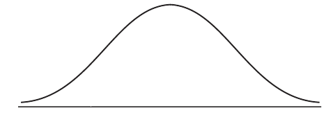
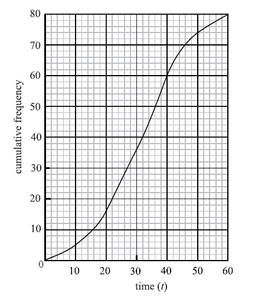
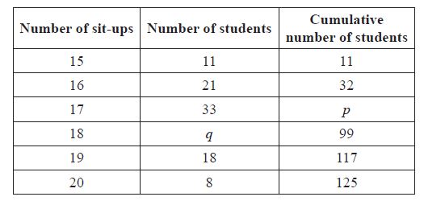
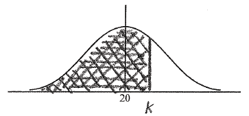
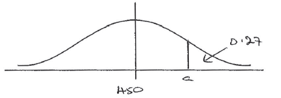
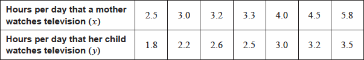
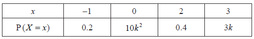

SL Paper 2
The heights of certain plants are normally distributed. The plants are classified into three categories.
The shortest \(12.92\% \) are in category A.
The tallest \(10.38\% \) are in category C.
All the other plants are in category B with heights between \(r{\text{ cm}}\) and \(t{\text{ cm}}\) .
Complete the following diagram to represent this information.

Given that the mean height is \(6.84{\text{ cm}}\) and the standard deviation \(0.25{\text{ cm}}\) , find the value of r and of t.
Markscheme
 A1A1 N2
A1A1 N2
Notes: Award A1 for three regions (may be shown by lines or shading), A1 for clear labelling of two regions (may be shown by percentages or categories). r and t need not be labelled, but if they are, they may be interchanged.
[2 marks]
METHOD 1
\({\rm{P}}(X < r) = 0.1292\) (A1)
\(r = 6.56\) A1 N2
\(1 - 0.1038\) (= 0.8962) (may be seen later) A1
\({\rm{P}}(X < t) = 0.8962\) (A1)
\(t = 7.16\) A1 N2
METHOD 2
finding z-values \( - 1.130 \ldots{\text{, }}1.260 \ldots \) A1A1
evidence of setting up one standardised equation (M1)
e.g. \(\frac{{r - 6.84}}{{0.25}} = - 1.13 \ldots \) , \(t = 1.260 \times 0.25 + 6.84\)
\(r = 6.56\) , \(t = 7.16\) A1A1 N2N2
[5 marks]
Examiners report
Many candidates shaded or otherwise correctly labelled the appropriate regions in the normal curve.
Although many candidates shaded or otherwise correctly labelled the appropriate regions in the normal curve, far fewer could apply techniques of normal probabilities to achieve correct results in part (b). Many set the standardized formula equal to the probabilities instead of the appropriate z-scores, which can be found either by the use of tables or the GDC. Others simply left this part blank, which suggests a lack of preparation for such “inverse” types of questions in a normal distribution.
Let \(A\) and \(B\) be independent events, where \({\text{P}}(A) = 0.3\) and \({\text{P}}(B) = 0.6\).
Find \({\text{P}}(A \cap B)\).
Find \({\text{P}}(A \cup B)\).
On the following Venn diagram, shade the region that represents \(A \cap B'\).

Find \({\text{P}}(A \cap B')\).
Markscheme
correct substitution (A1)
eg \(0.3 \times 0.6\)
\({\text{P}}(A \cap B) = 0.18\) A1 N2
[2 marks]
correct substitution (A1)
eg \({\text{P}}(A \cup B) = 0.3 + 0.6 - 0.18\)
\({\text{P}}(A \cup B) = 0.72\) A1 N2
[2 marks]
 A1 N1
A1 N1
appropriate approach (M1)
eg \(0.3 - 0.18,{\text{ P}}(A) \times {\text{P}}(B')\)
\({\text{P}}(A \cap B') = 0.12\) (may be seen in Venn diagram) A1 N2
[2 marks]
Examiners report
The following frequency distribution of marks has mean 4.5.

Find the value of x.
Write down the standard deviation.
Markscheme
\(\sum {fx = 1(2) + 2(4) + \ldots + 7(4)} \) , \(\sum {fx = 146 + 5x} \) (seen anywhere) A1
evidence of substituting into mean \(\frac{{\sum {fx} }}{{\sum f }}\) (M1)
correct equation A1
e.g. \(\frac{{146 + 5x}}{{34 + x}} = 4.5\) , \(146 + 5x = 4.5(34 + x)\)
\(x = 14\) A1 N2
[4 marks]
\(\sigma = 1.54\) A2 N2
[2 marks]
Examiners report
Surprisingly, this question was not well done by many candidates. A good number of candidates understood the importance of the frequencies in calculating mean. Some neglected to sum the frequencies for the denominator, which often led to a negative value for a frequency. Unfortunately, candidates did not appreciate the unreasonableness of this result.
Surprisingly, this question was not well done by many candidates. A good number of candidates understood the importance of the frequencies in calculating mean. Some neglected to sum the frequencies for the denominator, which often led to a negative value for a frequency. Unfortunately, candidates did not appreciate the unreasonableness of this result. In part (b), many candidates could not find the standard deviation in their GDC, often trying to calculate it by hand with no success. Further, many could not distinguish between the sample and the population standard deviation given in the GDC.
Let the random variable X be normally distributed with mean 25, as shown in the following diagram.

The shaded region between 25 and 27 represents \(30\% \) of the distribution.
Find \({\rm{P}}(X > 27)\) .
Find the standard deviation of X .
Markscheme
symmetry of normal curve (M1)
e.g. \({\rm{P}}(X < 25) = 0.5\)
\({\rm{P}}(X > 27) = 0.2\) A1 N2
[2 marks]
METHOD 1
finding standardized value (A1)
e.g. \(\frac{{27 - 25}}{\sigma }\)
evidence of complement (M1)
e.g. \(1 - p\) , \({\rm{P}}(X < 27)\) , 0.8
finding z-score (A1)
e.g. \(z = 0.84 \ldots \)
attempt to set up equation involving the standardized value M1
e.g. \(0.84 = \frac{{27 - 25}}{\sigma }\) , \(0.84 = \frac{{X - \mu }}{\sigma }\)
\(\sigma = 2.38\) A1 N3
METHOD 2
set up using normal CDF function and probability (M1)
e.g. \({\rm{P}}(25 < X < 27) = 0.3\) , \({\rm{P}}(X < 27) = 0.8\)
correct equation A2
e.g. \({\rm{P}}(25 < X < 27) = 0.3\) , \({\rm{P}}(X > 27) = 0.2\)
attempt to solve the equation using GDC (M1)
e.g. solver, graph, trial and error (more than two trials must be shown)
\(\sigma = 2.38\) A1 N3
[5 marks]
Examiners report
This question proved challenging for many candidates. A surprising number did not use the symmetry of the normal curve to find the probability required in (a). While many students were able to set up a standardized equation in (b), far fewer were able to use the complement to find the correct z-score. Others used 0.8 as the z-score. A common confusion when approaching parts (a) and (b) was whether to use a probability or a z-score. Additionally, many candidates seemed unsure of appropriate notation on this problem which would have allowed them to better demonstrate their method.
This question proved challenging for many candidates. A surprising number did not use the symmetry of the normal curve to find the probability required in (a). While many students were able to set up a standardized equation in (b), far fewer were able to use the complement to find the correct z-score. Others used 0.8 as the z-score. A common confusion when approaching parts (a) and (b) was whether to use a probability or a z-score. Additionally, many candidates seemed unsure of appropriate notation on this problem which would have allowed them to better demonstrate their method.
The following table shows the average weights ( y kg) for given heights (x cm) in a population of men.
| Heights (x cm) | 165 | 170 | 175 | 180 | 185 |
| Weights (y kg) | 67.8 | 70.0 | 72.7 | 75.5 | 77.2 |
The relationship between the variables is modelled by the regression equation \(y = ax + b\).
Write down the value of \(a\) and of \(b\).
The relationship between the variables is modelled by the regression equation \(y = ax + b\).
Hence, estimate the weight of a man whose height is 172 cm.
Write down the correlation coefficient.
State which two of the following describe the correlation between the variables.
| strong | zero | positive |
| negative | no correlation | weak |
Markscheme
\(a = 0.486\) (exact) A1 N1
\(b = - 12.41\) (exact), \(-12.4\) A1 N1
[2 marks]
correct substitution (A1)
eg \(0.486(172) - 12.41\)
\(71.182\)
\(71.2\) (kg) A1 N2
[2 marks]
\(r = 0.997276\)
\(r = 0.997\) A1 N1
[1 mark]
strong, positive (must have both correct) A2 N2
[2 marks]
Examiners report
A company produces a large number of water containers. Each container has two parts, a bottle and a cap. The bottles and caps are tested to check that they are not defective.
A cap has a probability of 0.012 of being defective. A random sample of 10 caps is selected for inspection.
Find the probability that exactly one cap in the sample will be defective.
The sample of caps passes inspection if at most one cap is defective. Find the probability that the sample passes inspection.
The heights of the bottles are normally distributed with a mean of \(22{\text{ cm}}\) and a standard deviation of \(0.3{\text{ cm}}\).
(i) Copy and complete the following diagram, shading the region representing where the heights are less than \(22.63{\text{ cm}}\).

(ii) Find the probability that the height of a bottle is less than \(22.63{\text{ cm}}\).
(i) A bottle is accepted if its height lies between \(21.37{\text{ cm}}\) and \(22.63{\text{ cm}}\). Find the probability that a bottle selected at random is accepted.
(ii) A sample of 10 bottles passes inspection if all of the bottles in the sample are accepted. Find the probability that the sample passes inspection.
The bottles and caps are manufactured separately. A sample of 10 bottles and a sample of 10 caps are randomly selected for testing. Find the probability that both samples pass inspection.
Markscheme
Note: There may be slight differences in answers, depending on whether candidates use tables or GDCs, or their 3 sf answers in subsequent parts. Do not penalise answers that are consistent with their working and check carefully for FT.
evidence of recognizing binomial (seen anywhere in the question) (M1)
e.g. \(_n{C_r}{p^r}{q^{n - r}}\) , \({\text{B}}(n{\text{, }}p)\) , \(^{10}{C_1}{(0.012)^1}{(0.988)^9}\)
\(p = 0.108\) A1 N2
[2 marks]
valid approach (M1)
e.g. \({\rm{P}}(X \le 1)\) , \(0.88627 \ldots + 0.10764 \ldots \)
\(p = 0.994\) A1 N2
[2 marks]
(i)
 A1A1 N2
A1A1 N2
Note: Award A1 for vertical line to right of mean, A1 for shading to left of their vertical line.
(ii) valid approach (M1)
e.g. \({\rm{P}}(X < 22.63)\)
working to find standardized value (A1)
e.g. \(\frac{{22.63 - 22}}{{0.3}}\) , 2.1
\(p = 0.982\) A1 N3
[5 marks]
valid approach (M1)
e.g. \({\rm{P}}(21.37 < X < 22.63)\) , \({\rm{P}}( - 2.1 < z < 2.1)\)
correct working (A1)
e.g. \(0.982 - (1 - 0.982)\)
\(p = 0.964\) A1 N3
(ii) correct working (A1)
e.g. \(X \sim {\rm{B}}(10,0.964)\) , \({(0.964)^{10}}\)
\(p = 0.695\) (accept 0.694 from tables) A1 N2
[5 marks]
valid approach (M1)
e.g. \({\rm{P}}(A \cap B) = {\rm{P}}(A){\rm{P}}(B)\) , \((0.994) \times {(0.964)^{10}}\)
\(p = 0.691\) (accept \(0.690\) from tables) A1 N2
[2 marks]
Examiners report
Many stronger candidates were completely successful with this question, employing technology efficiently. A number of candidates did not recognize the binomial probability in parts (a) and (b), and in part (b) a proportion of candidates just subtracted their part (a) answer from one. Candidates had more success with the normal distribution and many obtained follow-through marks in part (e) after an error made in part (b). Many candidates did not appreciate the independence in part (e) and added probabilities rather than multiplying them. A number of candidates were penalised for not giving their answers to 3 significant figures.
Many stronger candidates were completely successful with this question, employing technology efficiently. A number of candidates did not recognize the binomial probability in parts (a) and (b), and in part (b) a proportion of candidates just subtracted their part (a) answer from one. Candidates had more success with the normal distribution and many obtained follow-through marks in part (e) after an error made in part (b). Many candidates did not appreciate the independence in part (e) and added probabilities rather than multiplying them. A number of candidates were penalised for not giving their answers to 3 significant figures.
Many stronger candidates were completely successful with this question, employing technology efficiently. A number of candidates did not recognize the binomial probability in parts (a) and (b), and in part (b) a proportion of candidates just subtracted their part (a) answer from one. Candidates had more success with the normal distribution and many obtained follow-through marks in part (e) after an error made in part (b). Many candidates did not appreciate the independence in part (e) and added probabilities rather than multiplying them. A number of candidates were penalised for not giving their answers to 3 significant figures.
Many stronger candidates were completely successful with this question, employing technology efficiently. A number of candidates did not recognize the binomial probability in parts (a) and (b), and in part (b) a proportion of candidates just subtracted their part (a) answer from one. Candidates had more success with the normal distribution and many obtained follow-through marks in part (e) after an error made in part (b). Many candidates did not appreciate the independence in part (e) and added probabilities rather than multiplying them. A number of candidates were penalised for not giving their answers to 3 significant figures.
Many stronger candidates were completely successful with this question, employing technology efficiently. A number of candidates did not recognize the binomial probability in parts (a) and (b), and in part (b) a proportion of candidates just subtracted their part (a) answer from one. Candidates had more success with the normal distribution and many obtained follow-through marks in part (e) after an error made in part (b). Many candidates did not appreciate the independence in part (e) and added probabilities rather than multiplying them. A number of candidates were penalised for not giving their answers to 3 significant figures.
A box contains a large number of biscuits. The weights of biscuits are normally distributed with mean \(7{\text{ g}}\) and standard deviation \(0.5{\text{ g}}\) .
One biscuit is chosen at random from the box. Find the probability that this biscuit
(i) weighs less than \(8{\text{ g}}\) ;
(ii) weighs between \(6{\text{ g}}\) and \(8{\text{ g}}\) .
Five percent of the biscuits in the box weigh less than d grams.
(i) Copy and complete the following normal distribution diagram, to represent this information, by indicating d, and shading the appropriate region.

(ii) Find the value of d.
The weights of biscuits in another box are normally distributed with mean \(\mu \) and standard deviation \(0.5{\text{ g}}\). It is known that \(20\% \) of the biscuits in this second box weight less than \(5{\text{ g}}\).
Find the value of \(\mu \) .
Markscheme
\(X \sim {\text{N}}(7{\text{, }}{0.5^2})\)
(i) \(z = 2\) (M1)
\({\rm{P}}(X < 8) = {\rm{P}}(Z < 2) = 0.977\) A1 N2
(ii) evidence of appropriate approach (M1)
e.g. symmetry, \(z = - 2\)
\({\rm{P}}(6 < X < 8) = 0.954\) (tables 0.955) A1 N2
Note: Award M1A1(AP) if candidates refer to 2 standard deviations from the mean, leading to 0.95.
[4 marks]
(i)
 A1A1 N2
A1A1 N2
Note: Award A1 for d to the left of the mean, A1 for area to the left of d shaded.
(ii) \(z = - 1.645\) (A1)
\(\frac{{d - 7}}{{0.5}} = - 1.645\) (M1)
\(d = 6.18\) A1 N3
[5 marks]
\(Y \sim {\text{N}}(\mu {\text{, }}{0.5^2})\)
\({\rm{P}}(Y < 5) = 0.2\) (M1)
\(z = - 0.84162 \ldots \) A1
\(\frac{{5 - \mu }}{{0.5}} = - 0.8416\) (M1)
\(\mu = 5.42\) A1 N3
[4 marks]
Examiners report
Those that understood the normal distribution did well on parts (a) and (bi).
Those that understood the normal distribution did well on parts (a) and (bi). Parts (bii) and (c) proved to be a little more difficult. In particular, in part (bii) the z-score was incorrectly set equal to 0.05 and in part (c), 0.2 was used instead of the z-score. For those who had a good grasp of the concept of normal distributions the entire question was quite accessible and full marks were gained.
Those that understood the normal distribution did well on parts (a) and (bi). Parts (bii) and (c) proved to be a little more difficult. In particular, in part (bii) the z-score was incorrectly set equal to 0.05 and in part (c), 0.2 was used instead of the z-score. For those who had a good grasp of the concept of normal distributions the entire question was quite accessible and full marks were gained.
The histogram below shows the time T seconds taken by 93 children to solve a puzzle.

The following is the frequency distribution for T .

(i) Write down the value of p and of q .
(ii) Write down the median class.
A child is selected at random. Find the probability that the child takes less than 95 seconds to solve the puzzle.
Consider the class interval \(45 \le T < 55\) .
(i) Write down the interval width.
(ii) Write down the mid-interval value.
Hence find an estimate for the
(i) mean;
(ii) standard deviation.
John assumes that T is normally distributed and uses this to estimate the probability that a child takes less than 95 seconds to solve the puzzle.
Find John’s estimate.
Markscheme
(i) \(p = 17\) , \(q = 11\) A1A1 N2
(ii) \(75 \le T < 85\) A1 N1
[3 marks]
evidence of valid approach (M1)
e.g. adding frequencies
\(\frac{{76}}{{93}} = 0.8172043 \ldots \)
\({\rm{P}}(T < 95) = \frac{{76}}{{93}} = 0.817\) A1 N2
[2 marks]
(i) 10 A1 N1
(ii) 50 A1 N1
[2 marks]
(i) evidence of approach using mid-interval values (may be seen in part (ii)) (M1)
\(79.1397849\)
\(\overline x = 79.1\) A2 N3
(ii) \(16.4386061\)
\(\sigma = 16.4\) A1 N1
[4 marks]
e.g. standardizing, \(z = 0.9648 \ldots \)
\(0.8326812\)
\({\rm{P}}(T < 95) = 0.833\) A1 N2
[2 marks]
Examiners report
Parts (a) and (b) were generally well done. The terms "median" and "median class" were often confused.
Parts (a) and (b) were generally well done. The terms "median" and "median class" were often confused.
In part (c) some candidates had problems with the term "interval width" and there were some rather interesting mid-interval values noted.
In part (d), candidates often ignored the "hence" command and estimated values from the graph rather than from the information in part (c).
Those who correctly obtained the mean and standard deviation had little difficulty with part (e) although candidates often used unfamiliar calculator notation as their working or used the mid-interval value as the mean of the distribution.
Consider the following cumulative frequency table.

Find the value of \(p\) .
Find
(i) the mean;
(ii) the variance.
Markscheme
valid approach (M1)
eg \(35 - 26\) , \(26 + p = 36\)
\(p = 9\) A1 N2
[2 marks]
(i) mean \( = 26.7\) A2 N2
(ii) recognizing that variance is (sd)2 (M1)
eg \(11.021{ \ldots ^2}\) , \(\sigma = \sqrt {{\mathop{\rm var}} } \) , \(11.158{ \ldots ^2}\)
\({\sigma ^2} = 121\) A1 N2
[4 marks]
Examiners report
Candidates had little problem determining a missing frequency from a cumulative frequency table.
In part (b), few used the GDC to their advantage to correctly find the mean and variance. There were numerous unsuccessful attempts at using the formulae for mean and variance, most resulting in algebraic errors along the way. Candidates recognized the concept of variance but were often unable to determine what value should be squared.
Each day, a factory recorded the number ( \(x\) ) of boxes it produces and the total production cost ( \(y\) ) dollars. The results for nine days are shown in the following table.

Write down the equation of the regression line of y on x .
Use your regression line from part (a) as a model to answer the following.
Interpret the meaning of
(i) the gradient;
(ii) the y-intercept.
Estimate the cost of producing 60 boxes.
The factory sells the boxes for $19.99 each. Find the least number of boxes that the factory should produce in one day in order to make a profit.
Comment on the appropriateness of using your model to
(i) estimate the cost of producing 5000 boxes;
(ii) estimate the number of boxes produced when the total production cost is $540.
Markscheme
\(y = 10.7x + 121\) A1A1 N2
[2 marks]
(i) additional cost per box (unit cost) A1 N1
(ii) fixed costs A1 N1
[2 marks]
attempt to substitute into regression equation M1
e.g. \(y = 10.7 \times 60 + 121\) , \(y = 760.12 \ldots \)
\({\text{cost}} = \$ 760\) (accept \(\$ 763\) from 3 s.f. values) A1 N2
[2 marks]
setting up inequality (accept equation) M1
e.g. \(19.99x > 10.7x + 121\)
\(x > 12.94 \ldots \) A1
13 boxes (accept 14 from \(x > 13.02\) , using 3 s.f. values) A1 N2
Note: Exception to the FT rule: if working shown, award the final A1 for a correct integer solution for their value of x.
[3 marks]
(i) this would be extrapolation, not appropriate R1R1 N2
(ii) this regression line cannot predict x from y, not appropriate R1R1 N2
[4 marks]
Examiners report
A factory makes switches. The probability that a switch is defective is 0.04. The factory tests a random sample of 100 switches.
Find the mean number of defective switches in the sample.
Find the probability that there are exactly six defective switches in the sample.
Find the probability that there is at least one defective switch in the sample.
Markscheme
evidence of binomial distribution (may be seen in parts (b) or (c)) (M1)
e.g. np, \(100 \times 0.04\)
\({\text{mean}} = 4\) A1 N2
[2 marks]
\({\rm{P}}(X = 6) = \left( {\begin{array}{*{20}{c}}
{100}\\
6
\end{array}} \right){(0.04)^6}{(0.96)^{94}}\) (A1)
\( = 0.105\) A1 N2
[2 marks]
for evidence of appropriate approach (M1)
e.g. complement, \(1 - {\rm{P}}(X = 0)\)
\({\rm{P}}(X = 0) = {(0.96)^{100}} = 0.01687 \ldots \) (A1)
\({\rm{P}}(X \ge 1) = 0.983\) A1 N2
[3 marks]
Examiners report
Part (a) was handled well by most students.
Although this question was a rather straightforward question on binomial distribution, parts (b) and(c) seemed to cause much difficulty.
Although this question was a rather straightforward question on binomial distribution, parts (b) and(c) seemed to cause much difficulty. In part (c), finding at least one defective switch, many forgot to take the complement.
A multiple choice test consists of ten questions. Each question has five answers. Only one of the answers is correct. For each question, Jose randomly chooses one of the five answers.
Find the expected number of questions Jose answers correctly.
Find the probability that Jose answers exactly three questions correctly.
Find the probability that Jose answers more than three questions correctly.
Markscheme
\({\rm{E}}(X) = 2\) A1 N1
[1 mark]
evidence of appropriate approach involving binomial (M1)
e.g. \(\left( {\begin{array}{*{20}{c}}
{10}\\
3
\end{array}} \right){(0.2)^3}\) , \({(0.2)^3}{(0.8)^7}\) , \(X \sim {\rm{B}}(10,0.2)\)
\({\rm{P}}(X = 3) = 0.201\) A1 N2
[2 marks]
METHOD 1
\({\rm{P}}(X \le 3) = 0.10737 + 0.26844 + 0.30199 + 0.20133\) \(( = 0.87912 \ldots )\) (A1)
evidence of using the complement (seen anywhere) (M1)
e.g. \(1 - \) any probability , \({\rm{P}}(X > 3) = 1 - {\rm{P}}(X \le 3)\)
\({\rm{P}}(X > 3) = 0.121\) A1 N2
METHOD 2
recognizing that \({\rm{P}}(X > 3) = {\rm{P}}(X \ge 4)\) (M1)
e.g. summing probabilities from \(X = 4\) to \(X = 10\)
correct expression or values (A1)
e.g. \(\sum\limits_{r = 4}^{10} {\left( {\begin{array}{*{20}{c}}
{10}\\
r
\end{array}} \right)} {(0.2)^{10 - r}}{(0.8)^r}\)
\(0.08808 + 0.02642 + 0.005505 + 0.000786 + 0.0000737 + 0.000004 + 0.0000001\)
\({\rm{P}}(X > 3) = 0.121\) A1 N2
[3 marks]
Examiners report
Most candidates were able to find the mean by applying various methods. Although many recognised binomial probability, fewer were able to use the GDC effectively.
Most candidates were able to find the mean by applying various methods. Although many recognised binomial probability, fewer were able to use the GDC effectively.
Part (c) was problematic in some cases but most candidates recognized that either a sum of probabilities or the complement was required. Many misinterpreted "more than three" as inclusive of three, and so obtained incorrect answers. When adding individual probabilities, some candidates used three or fewer significant figures, which resulted in an incorrect final answer due to premature rounding.
The following is a cumulative frequency diagram for the time t, in minutes, taken by 80 students to complete a task.

Write down the median.
Find the interquartile range.
Complete the frequency table below.

Markscheme
median \(m = 32\) A1 N1
[1 mark]
lower quartile \({Q_1} = 22\) , upper quartile \({Q_3} = 40\) (A1)(A1)
\({\text{interquartile range}} = 18\) A1 N3
[3 marks]
 A1A1 N2
A1A1 N2
[2 marks]
Examiners report
This question was answered successfully by a majority of candidates. A common error was to use values of 20 and 60 for the lower and upper quartiles. Some were careless when reading the graph scale and wrote incorrect answers as a result.
This question was answered successfully by a majority of candidates. A common error was to use values of 20 and 60 for the lower and upper quartiles. Some were careless when reading the graph scale and wrote incorrect answers as a result.
This question was answered successfully by a majority of candidates. A common error was to use values of 20 and 60 for the lower and upper quartiles. Some were careless when reading the graph scale and wrote incorrect answers as a result.
The price of a used car depends partly on the distance it has travelled. The following table shows the distance and the price for seven cars on 1 January 2010.

The relationship between \(x\) and \(y\) can be modelled by the regression equation \(y = ax + b\).
On 1 January 2010, Lina buys a car which has travelled \(11\,000{\text{ km}}\).
The price of a car decreases by 5% each year.
Lina will sell her car when its price reaches \(10\,000\) dollars.
(i) Find the correlation coefficient.
(ii) Write down the value of \(a\) and of \(b\).
Use the regression equation to estimate the price of Lina’s car, giving your answer to the nearest 100 dollars.
Calculate the price of Lina’s car after 6 years.
Find the year when Lina sells her car.
Markscheme
Note: There may be slight differences in answers, depending on which values candidates carry through in subsequent parts. Accept answers that are consistent with their working.
(i) valid approach (M1)
eg\(\,\,\,\,\,\)correct value for \(r\) (or for \(a\) or \(b\) seen in (ii))
\( - 0.994347\)
\(r = - 0.994\) A1 N2
(ii) \( - 1.58095,{\text{ }}33480.3\)
\(a = - 1.58,{\text{ }}b = 33500\) A1A1 N2
[4 marks]
Note: There may be slight differences in answers, depending on which values candidates carry through in subsequent parts. Accept answers that are consistent with their working.
correct substitution into their regression equation
eg\(\,\,\,\,\,\)\( - 1.58095(11000){\text{ }} + 33480.3\) (A1)
\(16\,089.85{\text{ }}(16\,120{\text{ from 3sf}})\) (A1)
\({\text{price}} = 16\,100{\text{ }}({\text{dollars}})\) (must be rounded to the nearest 100 dollars) A1 N3
[3 marks]
Note: There may be slight differences in answers, depending on which values candidates carry through in subsequent parts. Accept answers that are consistent with their working.
METHOD 1
valid approach (M1)
eg\(\,\,\,\,\,\)\(P \times {({\text{rate}})^t}\)
\({\text{rate}} = 0.95\) (may be seen in their expression) (A1)
correct expression (A1)
eg\(\,\,\,\,\,\)\(16100 \times {0.95^6}\)
\(11\,834.97\)
\(11\,800{\text{ }}({\text{dollars}})\) A1 N2
METHOD 2
attempt to find all six terms (M1)
eg\(\,\,\,\,\,\)\(\left( {\left( {(16\,100 \times 0.95) \times 0.95} \right) \ldots } \right) \times 0.95\), table of values
5 correct values (accept values that round correctly to the nearest dollar)
\(15\,295,{\text{ }}14\,530,{\text{ }}13\,804,{\text{ }}13\,114,{\text{ }}12\,458\) A2
\(11\,835\)
\(11\,800{\text{ }}({\text{dollars}})\) A1 N2
[4 marks]
Note: There may be slight differences in answers, depending on which values candidates carry through in subsequent parts. Accept answers that are consistent with their working.
METHOD 1
correct equation (A1)
eg\(\,\,\,\,\,\)\(16\,100 \times {0.95^x}{\text{ = }}10\,000\)
valid attempt to solve (M1)
eg\(\,\,\,\,\,\) , using logs
, using logs
9.28453 (A1)
year 2019 A1 N2
METHOD 2
valid approach using table of values (M1)
both crossover values (accept values that round correctly to the nearest dollar) A2
eg\(\,\,\,\,\,\)\({\text{P}} = 10\,147{\text{ }}({\text{1 Jan 2019}}),{\text{ P}} = 9\,639.7{\text{ }}({\text{1 Jan 2020}})\)
year 2019 A1 N2
[4 marks]
Examiners report
Although the question talked about the regression equation, a few students tried to find the values of a and b by forming two equations with the coordinates of two points from the table. A considerable number of candidates did not write the value of the correlation coefficient or gave an incorrect one. It can be that a GDC feature (Diagnostics) from some calculators was turned off.
Part (b) was generally well done, with many candidates earning follow through marks. There were some difficulties in rounding the answer to the nearest 100 dollars.
Part (c) was attempted in two different ways: recognizing the correct rate 0.95 and then finding the price of the car after 6 years. Some of these candidates used a formula similar to the one for terms of a geometric sequence, \(P \times {({\text{rate)}}^{t - 1}}\), but substituted \(t\) by 6 and hence, got an incorrect result.
Others listed all six values to obtain the answer. When using this method, the problem was using less accurate intermediate results and hence, not getting the first 5 correct values of the car.
Many candidates either missed out questions 8 (c) and (d) or multiplied either \(0.05 \times 6 \times 16\,100\) or \(0.95 \times 6 \times 16\,100\) and failed to notice that the answer did not make sense. Other students tried to use the sum formula for a geometric series.
Many candidates either missed out questions 8 (c) and (d) or multiplied either \(0.05 \times 6 \times 16\,100\) or \(0.95 \times 6 \times 16\,100\) and failed to notice that the answer did not make sense. Other students tried to use the sum formula for a geometric series.
Part (d) was attempted using a graphical approach as well as analytically using logarithms to find the year in which Lina would sell the car, though many failed in giving the correct year. Common answers were “in the ninth year” or “in 2020”. The same happened to those candidates who used a table of values and found the price of the car after 9 years and 10 years. These candidates should be reminded to show both “crossover” values for a table method to be valid.
A discrete random variable \(X\) has the following probability distribution.

Find the value of \(k\).
Write down \({\text{P}}(X = 2)\).
Find \({\text{P}}(X = 2|X > 0)\).
Markscheme
valid approach (M1)
eg\(\,\,\,\,\,\)total probability = 1
correct equation (A1)
eg\(\,\,\,\,\,\)\(0.475 + 2{k^2} + \frac{k}{{10}} + 6{k^2} = 1,{\text{ }}8{k^2} + 0.1k - 0.525 = 0\)
\(k = 0.25\) A2 N3
[4 marks]
\({\text{P}}(X = 2) = 0.025\) A1 N1
[1 mark]
valid approach for finding \({\text{P}}(X > 0)\) (M1)
eg\(\,\,\,\,\,\)\(1 - 0.475,{\text{ }}2({0.25^2}) + 0.025 + 6({0.25^2}),{\text{ }}1 - {\text{P}}(X = 0),{\text{ }}2{k^2} + \frac{k}{{10}} + 6{k^2}\)
correct substitution into formula for conditional probability (A1)
eg\(\,\,\,\,\,\)\(\frac{{0.025}}{{1 - 0.475}},{\text{ }}\frac{{0.025}}{{0.525}}\)
0.0476190
\({\text{P}}(X = 2|X > 0) = \frac{1}{{21}}\) (exact), 0.0476 A1 N2
[3 marks]
Examiners report
The maximum temperature \(T\), in degrees Celsius, in a park on six randomly selected days is shown in the following table. The table also shows the number of visitors, \(N\), to the park on each of those six days.

The relationship between the variables can be modelled by the regression equation \(N = aT + b\).
Find the value of \(a\) and of \(b\).
Write down the value of \(r\).
Use the regression equation to estimate the number of visitors on a day when the maximum temperature is 15 °C.
Markscheme
evidence of set up (M1)
eg\(\,\,\,\,\,\)correct value for \(a\) or \(b\)
0.667315, 22.2117
\(a = 0.667,{\text{ }}b = 22.2\) A1A1 N3
[3 marks]
0.922958
\(r = 0.923\) A1 N1
[1 marks]
valid approach (M1)
eg\(\,\,\,\,\,\)\(0.667(15) + 22.2,{\text{ }}N(15)\)
32.2214 (A1)
32 (visitors) (must be an integer) A1 N2
[3 marks]
Examiners report
A test has five questions. To pass the test, at least three of the questions must be answered correctly.
The probability that Mark answers a question correctly is \(\frac{1}{5}\) . Let X be the number of questions that Mark answers correctly.
Bill also takes the test. Let Y be the number of questions that Bill answers correctly.
The following table is the probability distribution for Y .

(i) Find E(X ) .
(ii) Find the probability that Mark passes the test.
(i) Show that \(4a + 2b = 0.24\) .
(ii) Given that \({\rm{E}}(Y) = 1\) , find a and b .
Find which student is more likely to pass the test.
Markscheme
(i) valid approach (M1)
e.g. \(np\) , \(5 \times \frac{1}{5}\)
\({\rm{E}}(X) = 1\) A1 N2
(ii) evidence of appropriate approach involving binomial (M1)
e.g. \(X \sim B\left( {5,\frac{1}{5}} \right)\)
recognizing that Mark needs to answer 3 or more questions correctly (A1)
e.g. \({\rm{P}}(X \ge 3)\)
valid approach M1
e.g. \(1 - {\rm{P}}(X \le 2)\) , \({\rm{P}}(X = 3) + {\rm{P}}(X = 4) + {\rm{P}}(X = 5)\)
\({\text{P(pass)}} = 0.0579\) A1 N3
[6 marks]
(i) evidence of summing probabilities to 1 (M1)
e.g. \(0.67 + 0.05 + (a + 2b) + \ldots + 0.04 = 1\)
some simplification that clearly leads to required answer
e.g. \(0.76 + 4a + 2b = 1\) A1
\(4a + 2b = 0.24\) AG N0
(ii) correct substitution into the formula for expected value (A1)
e.g. \(0(0.67) + 1(0.05) + \ldots + 5(0.04)\)
some simplification (A1)
e.g. \(0.05 + 2a + 4b + \ldots + 5(0.04) = 1\)
correct equation A1
e.g. \(13a + 5b = 0.75\)
evidence of solving (M1)
\(a = 0.05\) , \(b = 0.02\) A1A1 N4
[8 marks]
attempt to find probability Bill passes (M1)
e.g. \({\rm{P}}(Y \ge 3)\)
correct value 0.19 A1
Bill (is more likely to pass) A1 N0
[3 marks]
Examiners report
There was wide spectrum of success on this problem. Candidates could normally find E(X) using \(n \times p\) but many failed to recognize that the "experiment" was binomial or that for Mark to the pass the test, he needed to answer either 3, 4 or 5 questions correctly.
Part (b) was generally well done although there were a number of algebraic errors particularly in part (b) (ii), leading to incorrect values of a and b. Again, appropriate use of the GDC here would have eliminated these errors.
In (c), candidates had trouble with the command term, "find" and often just wrote down either "Mark" or "Bill".
The following table shows a probability distribution for the random variable \(X\), where \({\text{E}}(X) = 1.2\).

A bag contains white and blue marbles, with at least three of each colour. Three marbles are drawn from the bag, without replacement. The number of blue marbles drawn is given by the random variable \(X\).
A game is played in which three marbles are drawn from the bag of ten marbles, without replacement. A player wins a prize if three white marbles are drawn.
Find \(q\).
Find \(p\).
Write down the probability of drawing three blue marbles.
Explain why the probability of drawing three white marbles is \(\frac{1}{6}\).
The bag contains a total of ten marbles of which \(w\) are white. Find \(w\).
Grant plays the game until he wins two prizes. Find the probability that he wins his second prize on his eighth attempt.
Markscheme
correct substitution into \({\text{E}}(X)\) formula (A1)
eg\(\,\,\,\,\,\)\(0(p) + 1(0.5) + 2(0.3) + 3(q) = 1.2\)
\(q = \frac{1}{{30}}\), 0.0333 A1 N2
[2 marks]
evidence of summing probabilities to 1 (M1)
eg\(\,\,\,\,\,\)\(p + 0.5 + 0.3 + q = 1\)
\(p = \frac{1}{6},{\text{ }}0.167\) A1 N2
[2 marks]
\({\text{P (3 blue)}} = \frac{1}{{30}},{\text{ }}0.0333\) A1 N1
[1 mark]
valid reasoning R1
eg\(\,\,\,\,\,\)\({\text{P (3 white)}} = {\text{P(0 blue)}}\)
\({\text{P(3 white)}} = \frac{1}{6}\) AG N0
[1 mark]
valid method (M1)
eg\(\,\,\,\,\,\)\({\text{P(3 white)}} = \frac{w}{{10}} \times \frac{{w - 1}}{9} \times \frac{{w - 2}}{8},{\text{ }}\frac{{_w{C_3}}}{{_{10}{C_3}}}\)
correct equation A1
eg\(\,\,\,\,\,\)\(\frac{w}{{10}} \times \frac{{w - 1}}{9} \times \frac{{w - 2}}{8} = \frac{1}{6},{\text{ }}\frac{{_w{C_3}}}{{_{10}{C_3}}} = 0.167\)
\(w = 6\) A1 N2
[3 marks]
recognizing one prize in first seven attempts (M1)
eg\(\,\,\,\,\,\)\(\left( {\begin{array}{*{20}{c}} 7 \\ 1 \end{array}} \right),{\text{ }}{\left( {\frac{1}{6}} \right)^1}{\left( {\frac{5}{6}} \right)^6}\)
correct working (A1)
eg\(\,\,\,\,\,\)\(\left( {\begin{array}{*{20}{c}} 7 \\ 1 \end{array}} \right){\left( {\frac{1}{6}} \right)^1}{\left( {\frac{5}{6}} \right)^6},{\text{ }}0.390714\)
correct approach (A1)
eg\(\,\,\,\,\,\)\(\left( {\begin{array}{*{20}{c}} 7 \\ 1 \end{array}} \right){\left( {\frac{1}{6}} \right)^1}{\left( {\frac{5}{6}} \right)^6} \times \frac{1}{6}\)
0.065119
0.0651 A1 N2
[4 marks]
Examiners report
In a school with 125 girls, each student is tested to see how many sit-up exercises (sit-ups) she can do in one minute. The results are given in the table below.

(i) Write down the value of p.
(ii) Find the value of q.
Find the median number of sit-ups.
Find the mean number of sit-ups.
Markscheme
(i) \(p = 65\) A1 N1
(ii) for evidence of using sum is 125 (or \(99 - p\) ) (M1)
\(q = 34\) A1 N2
[3 marks]
evidence of median position (M1)
e.g. 63rd student, \(\frac{{125}}{2}\)
median is 17 (sit-ups) A1 N2
[2 marks]
evidence of substituting into \(\frac{{\sum {fx} }}{{125}}\) (M1)
e.g. \(\frac{{15(11) + 16(21) + 17(33) + 18(34) + 19(18) + 20(8)}}{{125}}\) , \(\frac{{2176}}{{125}}\)
mean \(= 17.4\) A1 N2
[2 marks]
Examiners report
Part (a) of this question was well done.
Finding the median seemed to be the most difficult for the candidates. Most had the idea that it was in the middle but did not know how to find the value.
When calculating the mean, many ignored the frequencies.
Consider the following frequency table.

Write down the mode.
Find the value of the range.
Find the mean.
Find the variance.
Markscheme
\({\text{mode}} = 10\) A1 N1
[1 mark]
valid approach (M1)
eg\(\,\,\,\,\,\)\({x_{\max }} - {x_{\min }}\), interval 2 to 11
\({\text{range}} = 9\) A1 N2
[2 marks]
7.14666
\({\text{mean}} = 7.15\) A2 N2
[2 marks]
recognizing that variance is \({({\text{sd}})^2}\) (M1)
eg\(\,\,\,\,\,\)\(\operatorname{var} = {\sigma ^2},{\text{ 2.9060}}{{\text{5}}^2},{\text{ }}{2.92562^2}\)
\({\sigma ^2} = 8.44515\)
\({\sigma ^2} = 8.45\) A1 N2
[2 marks]
Examiners report
Paula goes to work three days a week. On any day, the probability that she goes on a red bus is \(\frac{1}{4}\) .
Write down the expected number of times that Paula goes to work on a red bus in one week.
In one week, find the probability that she goes to work on a red bus on exactly two days.
In one week, find the probability that she goes to work on a red bus on at least one day.
Markscheme
evidence of binomial distribution (seen anywhere) (M1)
e.g. \(X \sim {\text{B}}\left( {3{\text{, }}\frac{1}{4}} \right)\)
\({\rm{mean}} = \frac{3}{4}\) (\(= 0.75\)) A1 N2
[2 marks]
\({\rm{P}}(X = 2) = \left( {\begin{array}{*{20}{c}}
3\\
2
\end{array}} \right){\left( {\frac{1}{4}} \right)^2}\left( {\frac{3}{4}} \right)\) (A1)
\({\rm{P}}(X = 2) = 0.141\) \(\left( { = \frac{9}{{64}}} \right)\) A1 N2
[2 marks]
evidence of appropriate approach M1
e.g. complement, \(1 - {\rm{P}}(X = 0)\) , adding probabilities
\({\rm{P}}(X = 0) = {(0.75)^3}\) \(\left( { = 0.422,\frac{{27}}{{64}}} \right)\) (A1)
\({\rm{P}}(X \ge 1) = 0.578\) \(\left( { = \frac{{37}}{{64}}} \right)\) A1 N2
[3 marks]
Examiners report
Many candidates did not recognize the binomial nature of this question, suggesting an overall lack of preparation with this topic. Many used 7 days instead of 3 but could still earn marks in follow-through if working was shown. Those who could use their GDC effectively often answered correctly.
Many candidates did not recognize the binomial nature of this question, suggesting an overall lack of preparation with this topic. Many used 7 days instead of 3 but could still earn marks in follow-through if working was shown. Those who could use their GDC effectively often answered correctly.
Many candidates did not recognize the binomial nature of this question, suggesting an overall lack of preparation with this topic. Many used 7 days instead of 3 but could still earn marks in follow-through if working was shown. Those who could use their GDC effectively often answered correctly, although in part (c) some candidates misinterpreted the meaning of “at least one” and found either \({\rm{P}}(X \le 1)\) or \(1 - {\rm{P}}(X \le 1)\) .
Two fair 4-sided dice, one red and one green, are thrown. For each die, the faces are labelled 1, 2, 3, 4. The score for each die is the number which lands face down.
List the pairs of scores that give a sum of 6.
The probability distribution for the sum of the scores on the two dice is shown below.

Find the value of p , of q , and of r .
Fred plays a game. He throws two fair 4-sided dice four times. He wins a prize if the sum is 5 on three or more throws.
Find the probability that Fred wins a prize.
Markscheme
three correct pairs A1A1A1 N3
e.g. (2, 4), (3, 3), (4, 2) , R2G4, R3G3, R4G2
[3 marks]
\(p = \frac{1}{{16}}\) , \(q = \frac{2}{{16}}\) , \(r = \frac{2}{{16}}\) A1A1A1 N3
[3 marks]
let X be the number of times the sum of the dice is 5
evidence of valid approach (M1)
e.g. \(X \sim {\rm{B}}(n{\text{, }}p)\) , tree diagram, 5 sets of outcomes produce a win
one correct parameter (A1)
e.g. \(n = 4\) , \(p = 0.25\) , \(q = 0.75\)
Fred wins prize is \({\rm{P}}(X \ge 3)\) (A1)
appropriate approach to find probability M1
e.g. complement, summing probabilities, using a CDF function
correct substitution (A1)
e.g. \(1 - 0.949 \ldots \) , \(1 - \frac{{243}}{{256}}\) , \(0.046875 + 0.00390625\) , \(\frac{{12}}{{256}} + \frac{1}{{256}}\)
\({\text{probability of winning}} = 0.0508\) \(\left( {\frac{{13}}{{256}}} \right)\) A1 N3
[6 marks]
Examiners report
All but the weakest candidates managed to score full marks for parts (a) and (b). An occasional error in part (a) was including additional pair(s) or listing (3, 3) twice.
All but the weakest candidates managed to score full marks for parts (a) and (b).
Many candidates found part (c) challenging, as they failed to recognize the binomial probability. Successful candidates generally used either the binomial CDF function or the sum of two binomial probabilities. Some used approaches like multiplying probabilities or tree diagrams, but these were less successful.
The weights, \(W\), of newborn babies in Australia are normally distributed with a mean 3.41 kg and standard deviation 0.57 kg. A newborn baby has a low birth weight if it weighs less than \(w\) kg.
Given that 5.3% of newborn babies have a low birth weight, find \(w\).
A newborn baby has a low birth weight.
Find the probability that the baby weighs at least 2.15 kg.
Markscheme
valid approach (M1)
eg\(\,\,\,\,\,\)\(z = - 1.61643\), 
2.48863
\(w = 2.49{\text{ (kg)}}\) A2 N3
[3 marks]
correct value or expression (seen anywhere)
eg\(\,\,\,\,\,\)\(0.053 - {\text{P}}(X \leqslant 2.15),{\text{ }}0.039465\) (A1)
evidence of conditional probability (M1)
eg\(\,\,\,\,\,\)\(\frac{{{\text{P}}(2.15 \leqslant X \leqslant w}}{{{\text{P}}(X \leqslant w)}},{\text{ }}\frac{{0.039465}}{{0.053}}\)
0.744631
0.745 A1 N2
[3 marks]
Examiners report
Let \(C\) and \(D\) be independent events, with \({\text{P}}(C) = 2k\) and \({\text{P}}(D) = 3{k^2}\), where \(0 < k < 0.5\).
Write down an expression for \({\text{P}}(C \cap D)\) in terms of \(k\).
Given that \({\text{P}}(C \cap D) = 0.162\) find \(k\).
Find \({\text{P}}(C'|D)\).
Markscheme
\({\text{P}}(C \cap D) = 2k \times 3{k^2}\) (A1)
\({\text{P}}(C \cap D) = 6{k^3}\) A1 N2
[2 marks]
their correct equation (A1)
eg\(\;\;\;2k \times 3{k^2} = 0.162,{\text{ }}6{k^3} = 0.162\)
\(k = 0.3\) A1 N2
METHOD 1
finding their \({\text{P}}(C' \cap D)\) (seen anywhere) (A1)
eg \(0.4 \times 0.27,0.27 - 0.162,0.108\)
correct substitution into conditional probability formula (A1)
eg\(\;\;\;{\text{P}}(C'|D) = \frac{{{\text{P}}(C' \cap D)}}{{0.27}},{\text{ }}\frac{{(1 - 2k)(3{k^2})}}{{3{k^2}}}\)
\({\text{P}}(C'|D) = 0.4\) A1 N2
METHOD 2
recognizing \({\text{P}}(C'|D) = {\text{P}}(C')\) A1
finding their \({\text{P}}(C') = 1 - {\text{P}}(C)\) (only if first line seen) (A1)
eg\(\;\;\;1 - 2k,{\text{ }}1 - 0.6\)
\({\text{P}}(C'|D) = 0.4\) A1 N2
[3 marks]
Total [7 marks]
Examiners report
A factory has two machines, A and B. The number of breakdowns of each machine is independent from day to day.
Let \(A\) be the number of breakdowns of Machine A on any given day. The probability distribution for \(A\) can be modelled by the following table.

Let \(B\) be the number of breakdowns of Machine B on any given day. The probability distribution for \(B\) can be modelled by the following table.

On Tuesday, the factory uses both Machine A and Machine B. The variables \(A\) and \(B\) are independent.
Find \(k\).
(i) A day is chosen at random. Write down the probability that Machine A has no breakdowns.
(ii) Five days are chosen at random. Find the probability that Machine A has no breakdowns on exactly four of these days.
Find \({\text{E}}(B)\).
(i) Find the probability that there are exactly two breakdowns on Tuesday.
(ii) Given that there are exactly two breakdowns on Tuesday, find the probability that both breakdowns are of Machine A.
Markscheme
evidence of summing to 1 (M1)
eg\(\,\,\,\,\,\)\(0.55 + 0.3 + 0.1 + k = 1\)
\(k = 0.05{\text{ (exact)}}\) A1 N2
[2 marks]
(i) 0.55 A1 N1
(ii) recognizing binomial probability (M1)
eg\(\,\,\,\,\,\)\(X:{\text{ }}B(n,{\text{ }}p),{\text{ }}\left( {\begin{array}{*{20}{c}} 5 \\ 4 \end{array}} \right),{\text{ }}{(0.55)^4}(1 - 0.55),{\text{ }}\left( {\begin{array}{*{20}{c}} n \\ r \end{array}} \right){p^r}{q^{n - r}}\)
\(P(X = 4) = 0.205889\)
\(P(X = 4) = 0.206\) A1 N2
[3 marks]
correct substitution into formula for \({\text{E}}(X)\) (A1)
eg\(\,\,\,\,\,\)\(0.2 + (2 \times 0.08) + (3 \times 0.02)\)
\({\text{E}}(B) = 0.42{\text{ (exact)}}\) A1 N2
[2 marks]
(i) valid attempt to find one possible way of having 2 breakdowns (M1)
eg\(\,\,\,\,\,\)\(2A,{\text{ }}2B,{\text{ }}1A\) and \(1B\), tree diagram
one correct calculation for 1 way (seen anywhere) (A1)
eg\(\,\,\,\,\,\)\(0.1 \times 0.7,{\text{ }}0.55 \times 0.08,{\text{ }}0.3 \times 0.2\)
recognizing there are 3 ways of having 2 breakdowns (M1)
eg\(\,\,\,\,\,\)A twice or B twice or one breakdown each
correct working (A1)
eg\(\,\,\,\,\,\)\((0.1 \times 0.7) + (0.55 \times 0.08) + (0.3 \times 0.2)\)
\({\text{P(2 breakdowns)}} = 0.174{\text{ (exact)}}\) A1 N3
(ii) recognizing conditional probability (M1)
eg\(\,\,\,\,\,\)\({\text{P}}(A|B),{\text{ P}}(2A|{\text{2breakdowns}})\)
correct working (A1)
eg\(\,\,\,\,\,\)\(\frac{{0.1 \times 0.7}}{{0.174}}\)
\({\text{P}}(A = 2|{\text{two breakdowns}}) = 0.402298\)
\({\text{P}}(A = 2|{\text{two breakdowns}}) = 0.402\) A1 N2
[8 marks]
Examiners report
Candidates generally found parts (a), (b)(i) and (c) of this question the most straightforward and those who recognised the binomial distribution in (b)(ii) were usually able to obtain the required solution using their GDCs. Part (d)(i) proved to be more problematic with many candidates identifying one possible way of having two breakdowns (usually 1A and 1B), but not recognising three ways of having two breakdowns. Furthermore, many were not able to successfully calculate the probability of two breakdowns on one machine (and none on the other). The conditional probability in (d)(ii) was generally recognised though and those who showed their working in full were able to score follow through marks in this part.
Candidates generally found parts (a), (b)(i) and (c) of this question the most straightforward and those who recognised the binomial distribution in (b)(ii) were usually able to obtain the required solution using their GDCs. Part (d)(i) proved to be more problematic with many candidates identifying one possible way of having two breakdowns (usually 1A and 1B), but not recognising three ways of having two breakdowns. Furthermore, many were not able to successfully calculate the probability of two breakdowns on one machine (and none on the other). The conditional probability in (d)(ii) was generally recognised though and those who showed their working in full were able to score follow through marks in this part.
Candidates generally found parts (a), (b)(i) and (c) of this question the most straightforward and those who recognised the binomial distribution in (b)(ii) were usually able to obtain the required solution using their GDCs. Part (d)(i) proved to be more problematic with many candidates identifying one possible way of having two breakdowns (usually 1A and 1B), but not recognising three ways of having two breakdowns. Furthermore, many were not able to successfully calculate the probability of two breakdowns on one machine (and none on the other). The conditional probability in (d)(ii) was generally recognised though and those who showed their working in full were able to score follow through marks in this part.
Candidates generally found parts (a), (b)(i) and (c) of this question the most straightforward and those who recognised the binomial distribution in (b)(ii) were usually able to obtain the required solution using their GDCs. Part (d)(i) proved to be more problematic with many candidates identifying one possible way of having two breakdowns (usually 1A and 1B), but not recognising three ways of having two breakdowns. Furthermore, many were not able to successfully calculate the probability of two breakdowns on one machine (and none on the other). The conditional probability in (d)(ii) was generally recognised though and those who showed their working in full were able to score follow through marks in this part.
A fisherman catches 200 fish to sell. He measures the lengths, l cm of these fish, and the results are shown in the frequency table below.

Calculate an estimate for the standard deviation of the lengths of the fish.
A cumulative frequency diagram is given below for the lengths of the fish.

Use the graph to answer the following.
(i) Estimate the interquartile range.
(ii) Given that \(40\% \) of the fish have a length more than \(k{\text{ cm}}\), find the value of k.
In order to sell the fish, the fisherman classifies them as small, medium or large.
Small fish have a length less than \(20{\text{ cm}}\).
Medium fish have a length greater than or equal to \(20{\text{ cm}}\) but less than \(60{\text{ cm}}\).
Large fish have a length greater than or equal to \(60{\text{ cm}}\).
Write down the probability that a fish is small.
The cost of a small fish is \(\$ 4\), a medium fish \(\$ 10\), and a large fish \(\$ 12\).
Copy and complete the following table, which gives a probability distribution for the cost \(\$ X\) .

Find \({\text{E}}(X)\) .
Markscheme
evidence of using mid-interval values (5, 15, 25, 35, 50, 67.5, 87.5) (M1)
\(\sigma = 19.8\) (cm) A2 N3
[3 marks]
(i) \({Q_1} = 15\) , \({Q_3} = 40\) (A1)(A1)
\(IQR = 25\) (accept any notation that suggests the interval 15 to 40) A1 N3
(ii) METHOD 1
\(60\% \) have a length less than k (A1)
\(0.6 \times 200 = 120\) (A1)
\(k = 30\) (cm) A1 N2
METHOD 2
\(0.4 \times 200 = 80\) (A1)
\(200 - 80 = 120\) (A1)
\(k = 30\) (cm) A1 N2
[6 marks]
\(l < 20{\text{ cm}} \Rightarrow 70{\text{ fish}}\) (M1)
\({\rm{P(small)}} = \frac{{70}}{{200}}( = 0.35)\) A1 N2
[2 marks]
 A1A1 N2
A1A1 N2
[2 marks]
correct substitution (of their p values) into formula for \({\text{E}}(X)\) (A1)
e.g. \(4 \times 0.35 + 10 \times 0.565 + 12 \times 0.085\)
\({\text{E}}(X) = 8.07\) (accept \(\$ 8.07\)) A1 N2
[2 marks]
Examiners report
Part (a) defeated the vast majority of candidates who clearly had not been taught data entry. Some schools had attempted to teach how to use a formula rather than the GDC to find the standard deviation and their students invariably used this formula incorrectly. Use of the GDC was not only expected but should be emphasized as stated in the syllabus.
Part (b) revealed poor understanding of cumulative frequency and the IQR was often reported as an interval.
This was generally answered well although a number of candidates had difficulty with using the formula for expected value.
This was generally answered well although a number of candidates had difficulty with using the formula for expected value.
This was generally answered well although a number of candidates had difficulty with using the formula for expected value.
A random variable X is distributed normally with a mean of 20 and variance 9.
Find \({\rm{P}}(X \le 24.5)\) .
Let \({\rm{P}}(X \le k) = 0.85\) .
(i) Represent this information on the following diagram.

(ii) Find the value of k .
Markscheme
\(\sigma = 3\) (A1)
evidence of attempt to find \({\rm{P}}(X \le 24.5)\) (M1)
e.g. \(z = 1.5\) , \(\frac{{24.5 - 20}}{3}\)
\({\rm{P}}(X \le 24.5) = 0.933\) A1 N3
[3 marks]
 A1A1 N2
Note: Award A1 with shading that clearly extends to right of the mean, A1 for any correct label, either k, area or their value of k.
(ii) \(z = 1.03(64338)\) (A1)
attempt to set up an equation (M1)
e.g. \(\frac{{k - 20}}{3} = 1.0364\) , \(\frac{{k - 20}}{3} = 0.85\)
\(k = 23.1\) A1 N3
[5 marks]
Examiners report
This question clearly demonstrated that some centres are still not giving adequate treatment to this topic. A great many candidates neglected to find the standard deviation and used the variance throughout. More still did not leave their answers to the required accuracy. Ignoring the use of the variance, responses to part (a) demonstrated that most candidates were comfortable finding the required probability using their calculator or setting up a suitable standardized equation.
This question clearly demonstrated that some centres are still not giving adequate treatment to this topic. A great many candidates neglected to find the standard deviation and used the variance throughout. More still did not leave their answers to the required accuracy. Ignoring the use of the variance, responses to part (a) demonstrated that most candidates were comfortable finding the required probability using their calculator or setting up a suitable standardized equation. In part (b) (i), the sketch was often poorly shaded or incorrectly labelled. In (b) (ii), candidates frequently confused the z-score with the given probability of 0.85. Calculator approaches were more successful than working by hand but candidates should remember to avoid the use of calculator notation in their working, as it is not correct mathematical notation.
Adam is a beekeeper who collected data about monthly honey production in his bee hives. The data for six of his hives is shown in the following table.

The relationship between the variables is modelled by the regression line with equation \(P = aN + b\).
Adam has 200 hives in total. He collects data on the monthly honey production of all the hives. This data is shown in the following cumulative frequency graph.

Adam’s hives are labelled as low, regular or high production, as defined in the following table.

Adam knows that 128 of his hives have a regular production.
Write down the value of \(a\) and of \(b\).
Use this regression line to estimate the monthly honey production from a hive that has 270 bees.
Write down the number of low production hives.
Find the value of \(k\);
Find the number of hives that have a high production.
Adam decides to increase the number of bees in each low production hive. Research suggests that there is a probability of 0.75 that a low production hive becomes a regular production hive. Calculate the probability that 30 low production hives become regular production hives.
Markscheme
evidence of setup (M1)
eg\(\,\,\,\,\,\)correct value for \(a\) or \(b\)
\(a = 6.96103,{\text{ }}b = - 454.805\)
\(a = 6.96,{\text{ }}b = - 455{\text{ (accept }}6.96x - 455)\) A1A1 N3
[3 marks]
substituting \(N = 270\) into their equation (M1)
eg\(\,\,\,\,\,\)\(6.96(270) - 455\)
1424.67
\(P = 1420{\text{ (g)}}\) A1 N2
[2 marks]
40 (hives) A1 N1
[1 mark]
valid approach (M1)
eg\(\,\,\,\,\,\)\(128 + 40\)
168 hives have a production less than \(k\) (A1)
\(k = 1640\) A1 N3
[3 marks]
valid approach (M1)
eg\(\,\,\,\,\,\)\(200 - 168\)
32 (hives) A1 N2
[2 marks]
recognize binomial distribution (seen anywhere) (M1)
eg\(\,\,\,\,\,\)\(X \sim {\text{B}}(n,{\text{ }}p),{\text{ }}\left( {\begin{array}{*{20}{c}} n \\ r \end{array}} \right){p^r}{(1 - p)^{n - r}}\)
correct values (A1)
eg\(\,\,\,\,\,\)\(n = 40\) (check FT) and \(p = 0.75\) and \(r = 30,{\text{ }}\left( {\begin{array}{*{20}{c}} {40} \\ {30} \end{array}} \right){0.75^{30}}{(1 - 0.75)^{10}}\)
0.144364
0.144 A1 N2
[3 marks]
Examiners report
The following table shows the sales, \(y\) millions of dollars, of a company, \(x\) years after it opened.

The relationship between the variables is modelled by the regression line with equation \(y = ax + b\).
(i) Find the value of \(a\) and of \(b\).
(ii) Write down the value of \(r\).
Hence estimate the sales in millions of dollars after seven years.
Markscheme
(i) evidence of set up (M1)
eg\(\;\;\;\)correct value for \(a\), \(b\) or \(r\)
\(a = 4.8,{\text{ }}b = 1.2\) A1A1 N3
(ii) \(r = 0.988064\)
\(r = 0.988\) A1 N1
[4 marks]
correct substitution into their regression equation (A1)
eg\(\;\;\;4.8 \times 7 + 1.2\)
\(34.8\) (millions of dollars) (accept \(35\) and \({\text{34}}\,{\text{800}}\,{\text{000}}\)) A1 N2
[2 marks]
Total [6 marks]
Examiners report
Many answered this question completely correct, showing familiarity with the GDC operation for finding the equation of the line and coefficient. It was not uncommon to see \(a = 5.05\) and \(b = - 0.488\), which indicates incorrect use of the GDC lists to find the values.
Some candidates attempted an algebraic approach to finding the regression line and a few seemed to not recognize that \(r\) represents the coefficient of correlation.
Many answered this question completely correct, showing familiarity with the GDC operation for finding the equation of the line and coefficient. It was not uncommon to see \(a = 5.05\) and \(b = - 0.488\), which indicates incorrect use of the GDC lists to find the values.
Some candidates attempted an algebraic approach to finding the regression line and a few seemed to not recognize that \(r\) represents the coefficient of correlation.
The heights of a group of seven-year-old children are normally distributed with mean \(117{\text{ cm}}\) and standard deviation \(5{\text{ cm}}\). A child is chosen at random from the group.
Find the probability that this child is taller than \(122.5{\text{ cm}}\).
The heights of a group of seven-year-old children are normally distributed with mean \(117{\text{ cm}}\) and standard deviation \(5{\text{ cm}}\). A child is chosen at random from the group.
The probability that this child is shorter than \(k{\text{ cm}}\) is \(0.65\). Find the value of k .
Markscheme
evidence of appropriate method (M1)
e.g. \(z = \frac{{122.5 - 117}}{5}\) , sketch of normal curve showing mean and \(122.5\), \(1.1\)
\({\rm{P}}(Z < 1.1) = 0.8643\) (A1)
\(0.135666\)
\({\rm{P(H}} > 122.5) = 0.136\) A1 N3
[3 marks]
\(z = 0.3853\) (A1)
set up equation (M1)
e.g. \(\frac{{X - 117}}{5} = 0.3853\) , sketch
\(k = 118.926602\)
\(k = 199\) A1 N3
[3 marks]
Examiners report
There were many completely successful attempts at this question, with good use of formulae and calculator features.
There were many completely successful attempts at this question, with good use of formulae and calculator features.
However, in part (b) some candidates did not recognize the need to find the standardized value and set their equation equal to the probability given in the question, thus earning only one mark.
In a large university the probability that a student is left handed is 0.08. A sample of 150 students is randomly selected from the university. Let \(k\) be the expected number of left-handed students in this sample.
Find \(k\).
Hence, find the probability that exactly \(k\) students are left handed;
Hence, find the probability that fewer than \(k\) students are left handed.
Markscheme
evidence of binomial distribution (may be seen in part (b)) (M1)
eg\(\,\,\,\,\,\)\(np,{\text{ }}150 \times 0.08\)
\(k = 12\) A1 N2
[2 marks]
\({\text{P}}\left( {X = 12} \right) = \left( {\begin{array}{*{20}{c}}
{150} \\
{12}
\end{array}} \right){\left( {0.08} \right)^{12}}{\left( {0.92} \right)^{138}}\) (A1)
0.119231
probability \( = 0.119\) A1 N2
[2 marks]
recognition that \(X \leqslant 11\) (M1)
0.456800
\({\text{P}}(X < 12) = 0.457\) A1 N2
[2 marks]
Examiners report
Ten students were surveyed about the number of hours, \(x\), they spent browsing the Internet during week 1 of the school year. The results of the survey are given below.
\[\sum\limits_{i = 1}^{10} {{x_i} = 252,{\text{ }}\sigma = 5{\text{ and median}} = 27.} \]
During week 4, the survey was extended to all 200 students in the school. The results are shown in the cumulative frequency graph:

Find the mean number of hours spent browsing the Internet.
During week 2, the students worked on a major project and they each spent an additional five hours browsing the Internet. For week 2, write down
(i) the mean;
(ii) the standard deviation.
During week 3 each student spent 5% less time browsing the Internet than during week 1. For week 3, find
(i) the median;
(ii) the variance.
(i) Find the number of students who spent between 25 and 30 hours browsing the Internet.
(ii) Given that 10% of the students spent more than k hours browsing the Internet, find the maximum value of \(k\).
Markscheme
attempt to substitute into formula for mean (M1)
eg\(\,\,\,\,\,\)\(\frac{{\Sigma x}}{{10}},{\text{ }}\frac{{252}}{n},{\text{ }}\frac{{252}}{{10}}\)
mean \( = 25.2{\text{ (hours)}}\) A1 N2
[2 marks]
(i) mean \( = 30.2{\text{ (hours)}}\) A1 N1
(ii) \(\sigma = 5{\text{ (hours)}}\) A1 N1
[2 marks]
(i) valid approach (M1)
eg\(\,\,\,\,\,\)95%, 5% of 27
correct working (A1)
eg\(\,\,\,\,\,\)\(0.95 \times 27,{\text{ }}27 - (5\% {\text{ of }}27)\)
median \( = 25.65{\text{ (exact), }}25.7{\text{ (hours)}}\) A1 N2
(ii) METHOD 1
variance \( = {({\text{standard deviation}})^2}\) (seen anywhere) (A1)
valid attempt to find new standard deviation (M1)
eg\(\,\,\,\,\,\)\({\sigma _{new}} = 0.95 \times 5,{\text{ }}4.75\)
variance \( = 22.5625{\text{ }}({\text{exact}}),{\text{ }}22.6\) A1 N2
METHOD 2
variance \( = {({\text{standard deviation}})^2}\) (seen anywhere) (A1)
valid attempt to find new variance (M1)
eg\(\,\,\,\,\,\)\({0.95^2}{\text{ }},{\text{ }}0.9025 \times {\sigma ^2}\)
new variance \( = 22.5625{\text{ }}({\text{exact}}),{\text{ }}22.6\) A1 N2
[6 marks]
(i) both correct frequencies (A1)
eg\(\,\,\,\,\,\)80, 150
subtracting their frequencies in either order (M1)
eg\(\,\,\,\,\,\)\(150 - 80,{\text{ }}80 - 150\)
70 (students) A1 N2
(ii) evidence of a valid approach (M1)
eg\(\,\,\,\,\,\)10% of 200, 90%
correct working (A1)
eg\(\,\,\,\,\,\)\(0.90 \times 200,{\text{ }}200 - 20\), 180 students
\(k = 35\) A1 N3
[6 marks]
Examiners report
A random variable X is distributed normally with mean 450. It is known that \({\rm{P}}(X > a) = 0.27\) .
Represent all this information on the following diagram.

Given that the standard deviation is 20, find a . Give your answer correct to the nearest whole number.
Markscheme
 A1A1A1 N3
Note: Award A1 for 450 , A1 for a to the right of the mean, A1 for area 0.27 .
[3 marks]
valid approach M1
e.g. \({\rm{P}}(X < a) = 1 - {\rm{P}}(X > a)\) , 0.73
\(a = 462.256 \ldots \) A1
\(a = 462\) A1 N3
[3 marks]
Examiners report
The weights of fish in a lake are normally distributed with a mean of \(760\) g and standard deviation \(\sigma \). It is known that \(78.87\% \) of the fish have weights between \(705\) g and \(815\) g.
(i) Write down the probability that a fish weighs more than \(760\) g.
(ii) Find the probability that a fish weighs less than \(815\) g.
(i) Write down the standardized value for \(815\) g.
(ii) Hence or otherwise, find \(\sigma \).
A fishing contest takes place in the lake. Small fish, called tiddlers, are thrown back into the lake. The maximum weight of a tiddler is \(1.5\) standard deviations below the mean.
Find the maximum weight of a tiddler.
A fish is caught at random. Find the probability that it is a tiddler.
\(25\% \) of the fish in the lake are salmon. \(10\% \) of the salmon are tiddlers. Given that a fish caught at random is a tiddler, find the probability that it is a salmon.
Markscheme
Note: There may be slight differences in answers, depending on which values candidates carry through in subsequent parts. Accept answers that are consistent with their working.
(i) \({\text{P}}(X > 760) = 0.5{\text{ (exact), }}[0.499,{\text{ }}0.500]{\text{ }}\) A1 N1
(ii) evidence of valid approach (M1)
recognising symmetry, \(\frac{{0.7887}}{2},{\text{ }}1 - {\text{P}}(W < 815),{\text{ }}\frac{{21.13}}{2} + 78.87\% \)
correct working (A1)
eg\(\;\;\;\)\(0.5 + 0.39435,{\text{ }}1 - 0.10565,\)

\(0.89435{\text{ (exact)}},{\text{ }}0.894{\text{ }}[0.894,{\text{ }}0.895]\) A1 N2
[4 marks]
(i) \(1.24999\) A1 N1
\(z = 1.25{\text{ }}[1.24,{\text{ }}1.25]\)
(ii) evidence of appropriate approach (M1)
eg\(\;\;\;\)\(\sigma = \frac{{x - \mu }}{{1.25}},{\text{ }}\frac{{815 - 760}}{\sigma }\)
correct substitution (A1)
eg\(\;\;\;\)\(1.25 = \frac{{815 - 760}}{\sigma },{\text{ }}\frac{{815 - 760}}{{1.24999}}\)
\(44.0003\)
\(\sigma = 44.0{\text{ }}[44.0,{\text{ }}44.1]{\text{ (g)}}\) A1 N2
[4 marks]
correct working (A1)
eg\(\;\;\;\)\(760 - 1.5 \times 44\)
\(693.999\)
\(694{\text{ }}[693,{\text{ }}694]{\text{ (g)}}\) A1 N2
[2 marks]
\(0.0668056\)
\({\text{P}}(X < 694) = 0.0668{\text{ }}[0.0668,{\text{ }}0.0669]\) A2 N2
[2 marks]
recognizing conditional probability (seen anywhere) (M1)
eg\(\;\;\;\)\({\text{P}}({\text{A}}|{\text{B}}),{\text{ }}\frac{{0.025}}{{0.0668}}\)
appropriate approach involving conditional probability (M1)
eg\(\;\;\;\)\({\text{P}}(S|T) = \frac{{{\text{P}}(S{\text{ and }}T)}}{{{\text{P}}(T)}}\),
correct working
eg\(\;\;\;\)P (salmon and tiddler) \( = 0.25 \times 0.1,{\text{ }}\frac{{0.25 \times 0.1}}{{0.0668}}\) (A1)
\(0.374220\)
\(0.374{\text{ }}[0.374,{\text{ }}0.375]\) A1 N2
[4 marks]
Total [16 marks]
Examiners report
There was a wide range of ability shown by candidates in this question. While the majority knew how to find probabilities, very few understood the concepts behind the normal distribution, including the answer to the straightforward question (ai). Quite a few students did not yet recognize the instruction “write down”, spending considerable time trying to find the 0.5 answer in (ai) or the standardised value in (bi).
Many candidates did not understand question (bi), giving either a probability value as the z-value or finding the correct value later on in part (bii) in the calculation of the standard deviation (without recognising its significance). For many of those who did understand these concepts, the context of the question was not a real challenge and a number of candidates managed to answer the entire question correctly.
There was a wide range of ability shown by candidates in this question. While the majority knew how to find probabilities, very few understood the concepts behind the normal distribution, including the answer to the straightforward question (ai). Quite a few students did not yet recognize the instruction “write down”, spending considerable time trying to find the 0.5 answer in (ai) or the standardised value in (bi).
Many candidates did not understand question (bi), giving either a probability value as the z-value or finding the correct value later on in part (bii) in the calculation of the standard deviation (without recognising its significance). For many of those who did understand these concepts, the context of the question was not a real challenge and a number of candidates managed to answer the entire question correctly.
There was a wide range of ability shown by candidates in this question. While the majority knew how to find probabilities, very few understood the concepts behind the normal distribution, including the answer to the straightforward question (ai). Quite a few students did not yet recognize the instruction “write down”, spending considerable time trying to find the 0.5 answer in (ai) or the standardised value in (bi).
Many candidates did not understand question (bi), giving either a probability value as the z-value or finding the correct value later on in part (bii) in the calculation of the standard deviation (without recognising its significance). For many of those who did understand these concepts, the context of the question was not a real challenge and a number of candidates managed to answer the entire question correctly.
There was a wide range of ability shown by candidates in this question. While the majority knew how to find probabilities, very few understood the concepts behind the normal distribution, including the answer to the straightforward question (ai). Quite a few students did not yet recognize the instruction “write down”, spending considerable time trying to find the 0.5 answer in (ai) or the standardised value in (bi).
Many candidates did not understand question (bi), giving either a probability value as the z-value or finding the correct value later on in part (bii) in the calculation of the standard deviation (without recognising its significance). For many of those who did understand these concepts, the context of the question was not a real challenge and a number of candidates managed to answer the entire question correctly.
There was a wide range of ability shown by candidates in this question. While the majority knew how to find probabilities, very few understood the concepts behind the normal distribution, including the answer to the straightforward question (ai). Quite a few students did not yet recognize the instruction “write down”, spending considerable time trying to find the 0.5 answer in (ai) or the standardised value in (bi).
Many candidates did not understand question (bi), giving either a probability value as the z-value or finding the correct value later on in part (bii) in the calculation of the standard deviation (without recognising its significance). For many of those who did understand these concepts, the context of the question was not a real challenge and a number of candidates managed to answer the entire question correctly.
A competition consists of two independent events, shooting at 100 targets and running for one hour.
The number of targets a contestant hits is the \(S\) score. The \(S\) scores are normally distributed with mean 65 and standard deviation 10.
The distance in km that a contestant runs in one hour is the \(R\) score. The \(R\) scores are normally distributed with mean 12 and standard deviation 2.5. The \(R\) score is independent of the \(S\) score.
Contestants are disqualified if their \(S\) score is less than 50 and their \(R\) score is less than \(x\) km.
A contestant is chosen at random. Find the probability that their \(S\) score is less than 50.
Given that 1% of the contestants are disqualified, find the value of \(x\).
Markscheme
0.0668072
\({\text{P}}(S < 50) = 0.0668{\text{ }}({\text{accept P}}(S \leqslant 49) = 0.0548)\) A2 N2
[2 marks]
valid approach (M1)
Eg\(\,\,\,\,\,\)\({\text{P}}(S < 50) \times {\text{P}}(R < x)\)
correct equation (accept any variable) A1
eg\(\,\,\,\,\,\)\({\text{P}}(S < 50) \times {\text{P}}(R < x) = 1\% ,{\text{ }}0.0668072 \times p = 0.01,{\text{ P}}(R < x) = \frac{{0.01}}{{0.0668}}\)
finding the value of \({\text{P}}(R < x)\) (A1)
eg\(\,\,\,\,\,\)\(\frac{{0.01}}{{0.0668}},{\text{ }}0.149684\)
9.40553
\(x = 9.41{\text{ }}({\text{accept }}x = 9.74{\text{ from }}0.0548)\) A1 N3
[4 marks]
Examiners report
The first part of this question was a direct application of the normal distribution and most candidates who attempted the question obtained the correct value. In some cases, candidates gave the answer to 2 or 1 sf, losing a mark and taking the risk of obtaining an incorrect answer in the following question.
Part b) proved challenging for various reasons. Many did not recognize that 0.01 was the probability of an intersection. Others did not know how to find that probability using the fact that the events were independent. Some candidates thought that the independence formula was \({\text{P}}(A) + {\text{P}}(B) = 0.01\) instead of \({\text{P}}(A) \times {\text{P}}(B) = 0.01\).
Of those that were able to find the correct value of \({\text{P}}(R < x)\), only some continued to find the value of \(x\).
Premature rounding in the answer to (a) sometimes caused the final mark in (b) to be lost unnecessarily.
The weights, in grams, of oranges grown in an orchard, are normally distributed with a mean of 297 g. It is known that 79 % of the oranges weigh more than 289 g and 9.5 % of the oranges weigh more than 310 g.
The weights of the oranges have a standard deviation of σ.
The grocer at a local grocery store will buy the oranges whose weights exceed the 35th percentile.
The orchard packs oranges in boxes of 36.
Find the probability that an orange weighs between 289 g and 310 g.
Find the standardized value for 289 g.
Hence, find the value of σ.
To the nearest gram, find the minimum weight of an orange that the grocer will buy.
Find the probability that the grocer buys more than half the oranges in a box selected at random.
The grocer selects two boxes at random.
Find the probability that the grocer buys more than half the oranges in each box.
Markscheme
correct approach indicating subtraction (A1)
eg 0.79 − 0.095, appropriate shading in diagram
P(289 < w < 310) = 0.695 (exact), 69.5 % A1 N2
[2 marks]
METHOD 1
valid approach (M1)
eg 1 − p, 21
−0.806421
z = −0.806 A1 N2
METHOD 2
(i) & (ii)
correct expression for z (seen anywhere) (A1)
eg \(\frac{{289 - u}}{\sigma }\)
valid approach (M1)
eg 1 − p, 21
−0.806421
z = −0.806 (seen anywhere) A1 N2
[2 marks]
METHOD 1
attempt to standardize (M1)
eg \(\sigma = \frac{{289 - 297}}{z},\,\,\frac{{289 - 297}}{\sigma }\)
correct substitution with their z (do not accept a probability) A1
eg \( - 0.806 = \frac{{289 - 297}}{\sigma },\,\,\frac{{289 - 297}}{{ - 0.806}}\)
9.92037
σ = 9.92 A1 N2
METHOD 2
(i) & (ii)
correct expression for z (seen anywhere) (A1)
eg \(\frac{{289 - u}}{\sigma }\)
valid approach (M1)
eg 1 − p, 21
−0.806421
z = −0.806 (seen anywhere) A1 N2
valid attempt to set up an equation with their z (do not accept a probability) (M1)
eg \( - 0.806 = \frac{{289 - 297}}{\sigma },\,\,\frac{{289 - 297}}{{ - 0.806}}\)
9.92037
σ = 9.92 A1 N2
[3 marks]
valid approach (M1)
eg P(W < w) = 0.35, −0.338520 (accept 0.385320), diagram showing values in a standard normal distribution
correct score at the 35th percentile (A1)
eg 293.177
294 (g) A1 N2
Note: If working shown, award (M1)(A1)A0 for 293.
If no working shown, award N1 for 293.177, N1 for 293.
Exception to the FT rule: If the score is incorrect, and working shown, award A1FT for correctly finding their minimum weight (by rounding up)
[3 marks]
evidence of recognizing binomial (seen anywhere) (M1)
eg \(X \sim {\text{B}}\left( {36,\,\,p} \right),\,\,{}_n{C_a} \times {p^a} \times {q^{n - a}}\)
correct probability (seen anywhere) (A1)
eg 0.65
EITHER
finding P(X ≤ 18) from GDC (A1)
eg 0.045720
evidence of using complement (M1)
eg 1−P(X ≤ 18)
0.954279
P(X > 18) = 0.954 A1 N2
OR
recognizing P(X > 18) = P(X ≥ 19) (M1)
summing terms from 19 to 36 (A1)
eg P(X = 19) + P(X = 20) + … + P(X = 36)
0.954279
P(X > 18) = 0.954 A1 N2
[5 marks]
correct calculation (A1)
\({0.954^2},\,\,\left( \begin{gathered}
2 \hfill \\
2 \hfill \\
\end{gathered} \right){0.954^2}{\left( {1 - 0.954} \right)^0}\)
0.910650
0.911 A1 N2
[2 marks]
Examiners report
The weights in grams of 80 rats are shown in the following cumulative frequency diagram.

Do NOT write solutions on this page.
Write down the median weight of the rats.
Find the percentage of rats that weigh 70 grams or less.
The same data is presented in the following table.
| Weights \(w\) grams |
\(0 \leqslant w \leqslant 30\) | \(30 < w \leqslant 60\) | \(60 < w \leqslant 90\) | \(90 < w \leqslant 120\) |
| Frequency | \(p\) | \(45\) | \(q\) | \(5\) |
Write down the value of \(p\).
The same data is presented in the following table.
| Weights \(w\) grams |
\(0 \leqslant w \leqslant 30\) | \(30 < w \leqslant 60\) | \(60 < w \leqslant 90\) | \(90 < w \leqslant 120\) |
| Frequency | \(p\) | \(45\) | \(q\) | \(5\) |
Find the value of \(q\).
The same data is presented in the following table.
| Weights \(w\) grams |
\(0 \leqslant w \leqslant 30\) | \(30 < w \leqslant 60\) | \(60 < w \leqslant 90\) | \(90 < w \leqslant 120\) |
| Frequency | \(p\) | \(45\) | \(q\) | \(5\) |
Use the values from the table to estimate the mean and standard deviation of the weights.
Assume that the weights of these rats are normally distributed with the mean and standard deviation estimated in part (c).
Find the percentage of rats that weigh 70 grams or less.
Assume that the weights of these rats are normally distributed with the mean and standard deviation estimated in part (c).
A sample of five rats is chosen at random. Find the probability that at most three rats weigh 70 grams or less.
Markscheme
50 (g) A1 N1
[2 marks]
65 rats weigh less than 70 grams (A1)
attempt to find a percentage (M1)
eg \(\frac{{65}}{{80}},{\text{ }}\frac{{65}}{{80}} \times 100\)
81.25 (%) (exact), 81.3 A1 N3
[2 marks]
\(p = 10\) A2 N2
[2 marks]
subtracting to find \(q\) (M1)
eg \(75 - 45 - 10\)
\(q = 20\) A1 N2
[2 marks]
evidence of mid-interval values (M1)
eg \(15, 45, 75, 105\)
\(\overline x = 52.5\) (exact), \(\sigma = 22.5\) (exact) A1A1 N3
[3 marks]
0.781650
78.2 (%) A2 N2
[2 marks]
recognize binomial probability (M1)
eg \(X \sim {\text{B}}(n,{\text{ }}p)\), \(\left( \begin{array}{c}5\\r\end{array} \right)\) \( \times {0.782^r} \times {0.218^{5 - r}}\)
valid approach (M1)
eg \({\text{P}}(X \leqslant 3)\)
\(0.30067\)
\(0.301\) A1 N2
[3 marks]
Examiners report
A factory makes lamps. The probability that a lamp is defective is 0.05. A random sample of 30 lamps is tested.
Find the probability that there is at least one defective lamp in the sample.
A factory makes lamps. The probability that a lamp is defective is 0.05. A random sample of 30 lamps is tested.
Given that there is at least one defective lamp in the sample, find the probability that there are at most two defective lamps.
Markscheme
evidence of recognizing binomial (seen anywhere) (M1)
e.g. \({\rm{B}}(n{\text{, }}p)\), \({0.95^{30}}\)
finding \({\rm{P}}(X = 0) = 0.21463876\) (A1)
appropriate approach (M1)
e.g. complement, summing probabilities
\(0.785361\)
probability is \(0.785\) A1 N3
[4 marks]
identifying correct outcomes (seen anywhere) (A1)
e.g. \({\rm{P}}(X = 1) + {\rm{P}}(X = 2)\) , 1 or 2 defective, \(0.3389 \ldots + 0.2586 \ldots \)
recognizing conditional probability (seen anywhere) R1
e.g. \({\rm{P}}(A|B)\) , \({\rm{P}}(X \le 2|X \ge 1)\) , P(at most 2|at least 1)
appropriate approach involving conditional probability (M1)
e.g. \(\frac{{{\rm{P}}(X = 1) + {\rm{P}}(X = 2)}}{{{\rm{P}}(X \ge 1)}}\) , \(\frac{{0.3389 \ldots + 0.2586 \ldots }}{{0.785 \ldots }}\) , \(\frac{{1{\text{ or }}2}}{{0.785}}\)
\(0.760847\)
probability is \(0.761\) A1 N2
[4 marks]
Examiners report
Although candidates seemed more confident in attempting binomial probabilities than in previous years, some of them failed to recognize the binomial nature of the question in part (a). Many knew that the complement was required, but often used \(1 - {\rm{P}}(X = 1)\) or \(1 - {\rm{P}}(X \le 1)\) instead of \(1 - {\rm{P}}(X = 0)\) .
Part (b) was poorly answered. While some candidates recognized that it was a conditional probability, very few were able to correctly apply the formula, identify the outcomes and follow on to achieve the correct result.
Only a few could find the intersection of the events correctly. Several thought the numerator was a product (i.e. \({\rm{P}}({\text{at most 2}}) \times {\rm{P({\text{at least 1}})}}\)), and then cancelled common factors with the denominator. Others realized that \(x = 1\) and \(x = 2\) were required but multiplied their probabilities.
This was the most commonly missed out question from Section A.
A random variable X is distributed normally with mean 450 and standard deviation 20.
Find \({\rm{P}}(X \le 475)\) .
Given that \({\rm{P}}(X > a) = 0.27\) , find \(a\).
Markscheme
evidence of attempt to find \({\rm{P}}(X \le 475)\) (M1)
e.g. \({\rm{P}}(Z \le 1.25)\)
\({\rm{P}}(X \le 475) = 0.894\) A1 N2
[2 marks]
evidence of using the complement (M1)
e.g. 0.73, \(1 - p\)
\(z = 0.6128\) (A1)
setting up equation (M1)
e.g. \(\frac{{a - 450}}{{20}} = 0.6128\)
\(a = 462\) A1 N3
[4 marks]
Examiners report
It remains very clear that some centres still do not give appropriate attention to the normal distribution. This is a major cause for concern. Most candidates had been taught the topic but many had difficulty understanding the difference between \(z\), \(F(z)\), \(a\) and \(x\) . Very little working was shown which demonstrated understanding. Although the GDC was used extensively, candidates often worked with the wrong tail and did not write their answers correct to 3 significant figures.
It remains very clear that some centres still do not give appropriate attention to the normal distribution. This is a major cause for concern. Most candidates had been taught the topic but many had difficulty understanding the difference between \(z\), \(F(z)\), \(a\) and \(x\) . Very little working was shown which demonstrated understanding. Although the GDC was used extensively, candidates often worked with the wrong tail and did not write their answers correct to 3 significant figures.
Many candidates had trouble with part (b), a majority never found the complement, instead using their GDCs to calculate the result, which many times was finding a for \(P(X \leqslant a) = 0.27\) instead of for \(P(X \geqslant a) = 0.27\) . Many others substituted the values of \(0.27\) or \(0.73\) into the equation, instead of the \(z\)-scores.
A forest has a large number of tall trees. The heights of the trees are normally distributed with a mean of \(53\) metres and a standard deviation of \(8\) metres. Trees are classified as giant trees if they are more than \(60\) metres tall.
A tree is selected at random from the forest.
Find the probability that this tree is a giant.
A tree is selected at random from the forest.
Given that this tree is a giant, find the probability that it is taller than \(70\) metres.
Two trees are selected at random. Find the probability that they are both giants.
\(100\) trees are selected at random.
Find the expected number of these trees that are giants.
\(100\) trees are selected at random.
Find the probability that at least \(25\) of these trees are giants.
Markscheme
valid approach (M1)
eg \({\text{P}}(G) = {\text{P}}(H > 60,{\text{ }}z = 0.875,{\text{ P}}(H > 60) = 1 - 0.809,{\text{ N}}\left( {53, {8^2}} \right)\)
\(0.190786\)
\({\text{P}}(G) = 0.191\) A1 N2
[3 marks]
finding \({\text{P}}(H > 70) = 0.01679\) (seen anywhere) (A1)
recognizing conditional probability (R1)
eg \({\text{P}}(A\left| {B),{\text{ P}}(H > 70\left| {H > 60)} \right.} \right.\)
correct working (A1)
eg \(\frac{{0.01679}}{{0.191}}\)
\(0.0880209\)
\({\text{P}}(X > 70\left| {G) = 0.0880} \right.\) A1 N3
[6 marks]
attempt to square their \({\text{P}}(G)\) (M1)
eg \({0.191^2}\)
\(0.0363996\)
\({\text{P}}({\text{both }}G) = 0.0364\) A1 N2
[2 marks]
correct substitution into formula for \({\text{E}}(X)\) (A1)
eg \(100(0.191)\)
\({\text{E}}(G) = 19.1{\text{ }}[19.0,{\text{ }}19.1]\) A1 N2
[3 marks]
recognizing binomial probability (may be seen in part (c)(i)) (R1)
eg \(X \sim {\text{B}}(n,{\text{ }}p)\)
valid approach (seen anywhere) (M1)
eg \({\text{P}}(X \geqslant 25) = 1 - {\text{P}}(X \leqslant 24),{\text{ }}1 - {\text{P}}(X < a)\)
correct working (A1)
eg \({\text{P}}(X \leqslant 24) = 0.913 \ldots ,{\text{ }}1 - 0.913 \ldots \)
\(0.0869002\)
\({\text{P}}(X \geqslant 25) = 0.0869\) A1 N2
[3 marks]
Examiners report
Evan likes to play two games of chance, A and B.
For game A, the probability that Evan wins is 0.9. He plays game A seven times.
For game B, the probability that Evan wins is p . He plays game B seven times.
Find the probability that he wins exactly four games.
Write down an expression, in terms of p , for the probability that he wins exactly four games.
Hence, find the values of p such that the probability that he wins exactly four games is 0.15.
Markscheme
evidence of recognizing binomial probability (may be seen in (b) or (c)) (M1)
e.g. probability \( = \left( {\begin{array}{*{20}{c}}
7\\
4
\end{array}} \right){(0.9)^4}{(0.1)^3}\) , \(X \sim {\rm{B}}(7,0.9)\) , complementary probabilities
probability \(= 0.0230\) A1 N2
[2 marks]
correct expression A1A1 N2
e.g. \(\left( {\begin{array}{*{20}{c}}
7\\
4
\end{array}} \right){p^4}{(1 - p)^3}\) , \(35{p^4}{(1 - p)^3}\)
Note: Award A1 for binomial coefficient (accept \(\left( {\begin{array}{*{20}{c}}
7\\
3
\end{array}} \right)\) ) , A1 for \({p^4}{(1 - p)^3}\) .
[2 marks]
evidence of attempting to solve their equation (M1)
e.g. \(\left( {\begin{array}{*{20}{c}}
7\\
4
\end{array}} \right){p^4}{(1 - p)^3} = 0.15\) , sketch
\(p = 0.356\), \(0.770\) A1A1 N3
[3 marks]
Examiners report
Parts of this question were handled very well by a great many candidates. Most were able to recognize the binomial condition and had little difficulty with part (a). However, more than a few reported the answer as 0.23, thus incurring the accuracy penalty.
Those candidates that were successful in part (a) could easily write the required expression for part (b).
In part (c), many candidates set up the question correctly or set their expression from (b) equal to 0.15, however few candidates considered the GDC as a method to solve the equation. Rather, those who attempted usually tried to expand the polynomial, and still did not use the GDC to solve this equation. A graphical approach to the solution would reveal that there are two solutions for p, but few caught this subtlety.
A company makes containers of yogurt. The volume of yogurt in the containers is normally distributed with a mean of \(260\) ml and standard deviation of \(6\) ml.
A container which contains less than \(250\) ml of yogurt is underfilled.
A container is chosen at random. Find the probability that it is underfilled.
The company decides that the probability of a container being underfilled should be reduced to \(0.02\). It decreases the standard deviation to \(\sigma \) and leaves the mean unchanged.
Find \(\sigma \).
The company changes to the new standard deviation, \(\sigma \), and leaves the mean unchanged.
A container is chosen at random for inspection. It passes inspection if its volume of yogurt is between \(250\) and \(271\) ml.
(i) Find the probability that it passes inspection.
(ii) Given that the container is not underfilled, find the probability that it passes inspection.
A sample of \(50\) containers is chosen at random. Find the probability that \(48\) or more of the containers pass inspection.
Markscheme
\(0.0477903\)
probability \( = 0.0478\) A2 N2
[2 marks]
\({\text{P}}({\text{volume}} < 250) = 0.02\) (M1)
\(z = - 2.05374\;\;\;\)(may be seen in equation) A1
attempt to set up equation with \(z\) (M1)
eg\(\;\;\;\frac{{\mu - 260}}{\sigma } = z,{\text{ }}260 - 2.05(\sigma ) = 250\)
\(4.86914\)
\(\sigma = 4.87{\text{ (ml)}}\) A1 N3
[4 marks]
(i) \(0.968062\)
\({\text{P}}(250 < {\text{Vol}} < 271) = 0.968\) A2 N2
(ii) recognizing conditional probability (seen anywhere, including in correct working) R1
eg\(\;\;\;{\text{P}}(A|B),{\text{ }}\frac{{{\text{P}}(A \cap B)}}{{{\text{P}}(B)}},{\text{ P}}(A \cap B) = {\text{P}}(A|B){\text{P}}(B)\)
correct value or expression for \(P\) (not underfilled) (A1)
eg\(\;\;\;0.98,1 - 0.02,{\text{ }}1 - {\text{P}}(X < 250)\)
probability \( = \frac{{0.968}}{{0.98}}\) A1
\(0.987818\)
probability \( = 0.988\) A1 N2
[6 marks]
METHOD 1
evidence of recognizing binomial distribution (seen anywhere) (M1)
eg\(\;\;\;X\;\;\;{\text{B}}(50,{\text{ }}0.968),{\text{ binomial cdf, }}p = 0.968,{\text{ }}r = 47\)
\({\text{P}}(X \le 47\)) = 0.214106\) (A1)
evidence of using complement (M1)
eg\(\;\;\;1 - {\text{P}}(X \le 47\))
\(0.785894\)
probability \( = 0.786\) A1 N3
METHOD 2
evidence of recognizing binomial distribution (seen anywhere) (M1)
eg\(\;\;\;X\;\;\;{\text{B}}(50,{\text{ }}0.968),{\text{ binomial cdf, }}p = 0.968,{\text{ }}r = 47\)
\({\text{P(not pass)}} = 1 - {\text{P(pass)}} = 0.0319378\) (A1)
evidence of attempt to find \(P\) (\(2\) or fewer fail) (M1)
eg\(\;\;\;\)\(0\), \(1\), or \(2\) not pass, \({\text{B}}(50,{\text{ }}2)\)
\(0.785894\)
probability \( = 0.786\) A1 N3
METHOD 3
evidence of recognizing binomial distribution (seen anywhere) (M1)
eg\(\;\;\;X\;\;\;{\text{B}}(50,{\text{ }}0.968),{\text{ binomial cdf, }}p = 0.968,{\text{ }}r = 47\)
evidence of summing probabilities (M1)
eg\(\;\;\;{\text{P}}(X = 48) + {\text{P}}(X = 49) + {\text{P}}(X = 50)\)
correct working
eg\(\;\;\;0.263088 + 0.325488 + 0.197317\) (A1)
\(0.785894\)
probability \( = 0.786\) A1 N3
[4 marks]
Total [16 marks]
Examiners report
This question saw many candidates competently using their GDCs to obtain required values, although a surprising number in part (b) chose to use an inefficient ‘guess and check’ method to try and obtain the standard deviation. Those using a correct approach often used a rounded z-score to find \(\sigma \) leading to an inaccurate final answer. In part (c), some candidates did not recognize or understand how to apply the given condition. In part (d), the binomial distribution, although often recognized, was not applied successfully.
This question saw many candidates competently using their GDCs to obtain required values, although a surprising number in part (b) chose to use an inefficient ‘guess and check’ method to try and obtain the standard deviation. Those using a correct approach often used a rounded z-score to find \(\sigma \) leading to an inaccurate final answer. In part (c), some candidates did not recognize or understand how to apply the given condition. In part (d), the binomial distribution, although often recognized, was not applied successfully.
This question saw many candidates competently using their GDCs to obtain required values, although a surprising number in part (b) chose to use an inefficient ‘guess and check’ method to try and obtain the standard deviation. Those using a correct approach often used a rounded z-score to find \(\sigma \) leading to an inaccurate final answer. In part (c), some candidates did not recognize or understand how to apply the given condition. In part (d), the binomial distribution, although often recognized, was not applied successfully.
This question saw many candidates competently using their GDCs to obtain required values, although a surprising number in part (b) chose to use an inefficient ‘guess and check’ method to try and obtain the standard deviation. Those using a correct approach often used a rounded z-score to find \(\sigma \) leading to an inaccurate final answer. In part (c), some candidates did not recognize or understand how to apply the given condition. In part (d), the binomial distribution, although often recognized, was not applied successfully.
Samantha goes to school five days a week. When it rains, the probability that she goes to school by bus is 0.5. When it does not rain, the probability that she goes to school by bus is 0.3. The probability that it rains on any given day is 0.2.
On a randomly selected school day, find the probability that Samantha goes to school by bus.
Given that Samantha went to school by bus on Monday, find the probability that it was raining.
In a randomly chosen school week, find the probability that Samantha goes to school by bus on exactly three days.
After \(n\) school days, the probability that Samantha goes to school by bus at least once is greater than \(0.95\). Find the smallest value of \(n\).
Markscheme
appropriate approach (M1)
eg \({\text{P}}(R \cap B) + {\text{P}}(R' \cap B)\), tree diagram,
one correct multiplication (A1)
eg \(0.2 \times 0.5,{\text{ }}0.24\)
correct working (A1)
eg \(0.2 \times 0.5 + 0.8 \times 0.3,{\text{ }}0.1 + 0.24\)
\({\text{P(bus)}} = 0.34 {\text{(exact)}}\) A1 N3
[4 marks]
recognizing conditional probability (R1)
eg \({\text{P}}(A|B) = \frac{{{\text{P}}(A \cap B)}}{{{\text{P}}(B)}}\)
correct working A1
eg \(\frac{{0.2 \times 0.5}}{{0.34}}\)
\({\text{P}}(R|B) = \frac{5}{{17}},{\text{ }}0.294\) A1 N2
[3 marks]
recognizing binomial probability (R1)
eg \(X \sim {\text{B}}(n,{\text{ }}p)\), \(\left( \begin{array}{c}5\\3\end{array} \right)\) \({(0.34)^3},{\text{ }}{(0.34)^3}{(1 - 0.34)^2}\)
\({\text{P}}(X = 3) = 0.171\) A1 N2
[2 marks]
METHOD 1
evidence of using complement (seen anywhere) (M1)
eg \(1 - {\text{P (none), }}1 - 0.95\)
valid approach (M1)
eg \(1 - {\text{P (none)}} > 0.95,{\text{ P (none)}} < 0.05,{\text{ }}1 - {\text{P (none)}} = 0.95\)
correct inequality (accept equation) A1
eg \(1 - {(0.66)^n} > 0.95,{\text{ }}{(0.66)^n} = 0.05\)
\(n > 7.209{\text{ (accept }}n = 7.209{\text{)}}\) (A1)
\(n = 8\) A1 N3
METHOD 2
valid approach using guess and check/trial and error (M1)
eg finding \({\text{P}}(X \geqslant 1)\) for various values of n
seeing the “cross over” values for the probabilities A1A1
\(n = 7,{\text{ P}}(X \geqslant 1) = 0.9454,{\text{ }}n = 8,{\text{ P}}(X \geqslant 1) = 0.939\)
recognising \(0.9639 > 0.95\) (R1)
\(n = 8\) A1 N3
[5 marks]
Examiners report
A standard die is rolled 36 times. The results are shown in the following table.

Write down the standard deviation.
Write down the median score.
Find the interquartile range.
Markscheme
\(\sigma = 1.61\) A2 N2
[2 marks]
median \( = 4.5\) A1 N1
[1 mark]
\({Q_1} = 3\) , \({Q_3} = 5\) (may be seen in a box plot) (A1)(A1)
\({\text{IQR}} = 2\) (accept any notation that suggests the interval 3 to 5) A1 N3
[3 marks]
Examiners report
Surprisingly, this question was not answered well primarily due to incorrect GDC use and a lack of understanding of the terms "median" and "interquartile range". Many candidates opted for an analytical approach in part (a) which always resulted in mistakes.
Some candidates wrote the down the mean instead of the median in part (b).
Surprisingly, this question was not answered well primarily due to incorrect GDC use and a lack of understanding of the terms "median" and "interquartile range".
The following table shows the average number of hours per day spent watching television by seven mothers and each mother’s youngest child.

The relationship can be modelled by the regression line with equation \(y = ax + b\).
(i) Find the correlation coefficient.
(ii) Write down the value of \(a\) and of \(b\).
Elizabeth watches television for an average of \(3.7\) hours per day.
Use your regression line to predict the average number of hours of television watched per day by Elizabeth’s youngest child. Give your answer correct to one decimal place.
Markscheme
(i) evidence of valid approach (M1)
eg\(\;\;\;\)\(1\) correct value for \(r\), (or for \(a\) or \(b\), seen in (ii))
\(0.946591\)
\(r = 0.947\) A1 N2
(ii) \(a = 0.500957,{\text{ }}b = 0.803544\)
\(a = 0.501,{\text{ }}b = 0.804\) A1A1 N2
[4 marks]
substituting \(x = 3.7\) into their equation (M1)
eg\(\;\;\;0.501(3.7) + 0.804\)
\(2.65708\;\;\;\)(\(2\) hours \(39.4252\) minutes) (A1)
\(y = 2.7\) (hours) (must be correct \(1\) dp, accept \(2\) hours \(39.4\) minutes) A1 N3
[3 marks]
Total [7 marks]
Examiners report
Candidates continue to have difficulty using their GDCs to find and correctly identify the coefficients of a linear regression. Both the \(r\) and \({r^2}\) values were often given as candidates were hedging their bets and were not entirely clear which one to give. Candidates frequently were unable to find the correct values for \(a\) and \(b\) suggesting a lack of familiarity working with GDCs. It was also surprising to see so many candidates leave these values to only one significant figure sacrificing all the marks for this part. Subsequent use of their line to find \(y\) for a given \(x\) was not difficult for most, but answers were not often given to the required accuracy of one decimal place.
Candidates continue to have difficulty using their GDCs to find and correctly identify the coefficients of a linear regression. Both the \(r\) and \({r^2}\) values were often given as candidates were hedging their bets and were not entirely clear which one to give. Candidates frequently were unable to find the correct values for \(a\) and \(b\) suggesting a lack of familiarity working with GDCs. It was also surprising to see so many candidates leave these values to only one significant figure sacrificing all the marks for this part. Subsequent use of their line to find \(y\) for a given \(x\) was not difficult for most, but answers were not often given to the required accuracy of one decimal place.
The probability of obtaining “tails” when a biased coin is tossed is \(0.57\). The coin is tossed ten times. Find the probability of obtaining at least four tails.
The probability of obtaining “tails” when a biased coin is tossed is 0.57. The coin is tossed ten times. Find the probability of obtaining the fourth tail on the tenth toss.
Markscheme
evidence of recognizing binomial distribution (M1)
e.g. \(X \sim {\rm{B}}(10,0.57)\) , \(p = 0.57\) , \(q = 0.43\)
EITHER
\({\rm{P}}(X \le 3) = 2.16 \times {10^{ - 4}} + 0.00286 + 0.01709 + 0.06041\) \(( = 0.08057)\) (A1)
evidence of using complement (M1)
e.g. \(1 - \) any probability, \({\rm{P}}(X \ge 4) = 1 - {\rm{P}}(X \le 3)\)
\(0.919423 \ldots \)
\({\rm{P}}(X \ge 4) = 0.919\) A1 N3
OR
summing the probabilities from \(X = 4\) to \(X = 10\) (M1)
correct expression or values (A1)
e.g. \(\sum\limits_{r = 4}^{10} {\left( {\begin{array}{*{20}{c}}
{10}\\
r
\end{array}} \right)} {(0.57)^r}{(0.43)^{10 - r}}\) , \(0.14013 + 0.2229 + \ldots + 0.02731 + 0.00362\)
0.919424
\({\rm{P}}(X \ge 4) = 0.919\) A1 N3
[4 marks]
evidence of valid approach (M1)
e.g. three tails in nine tosses, \(\left( {\begin{array}{*{20}{c}}
9\\
3
\end{array}} \right){(0.57)^3}{(0.43)^6}\)
correct calculation
e.g. \(\left( {\begin{array}{*{20}{c}}
9\\
3
\end{array}} \right){(0.57)^3}{(0.43)^6} \times 0.57\) , \(0.09834 \times 0.57\) (A1)
\(0.05605178 \ldots \)
\({\text{P(4th tail on 10th toss)}} = 0.0561\) A1 N2
[3 marks]
Examiners report
This was an accessible problem that created some difficulties for candidates. Most were able to recognize the binomial nature of the problem but were confused by the phrase "at least four tails" which was often interpreted as the complement of four or less. Poor algebraic manipulation also led to unnecessary errors that the calculator approach would have avoided.
This was an accessible problem that created some difficulties for candidates. Most were able to recognize the binomial nature of the problem but were confused by the phrase "at least four tails" which was often interpreted as the complement of four or less. Poor algebraic manipulation also led to unnecessary errors that the calculator approach would have avoided.
The following table shows the mean weight, y kg , of children who are x years old.
![]()
The relationship between the variables is modelled by the regression line with equation \(y = ax + b\).
Find the value of a and of b.
Write down the correlation coefficient.
Use your equation to estimate the mean weight of a child that is 1.95 years old.
Markscheme
valid approach (M1)
eg correct value for a or b (or for r seen in (ii))
a = 1.91966 b = 7.97717
a = 1.92, b = 7.98 A1A1 N3
[3 marks]
0.984674
r = 0.985 A1 N1
[1 mark]
correct substitution into their equation (A1)
eg 1.92 × 1.95 + 7.98
11.7205
11.7 (kg) A1 N2
[2 marks]
Examiners report
The weights of players in a sports league are normally distributed with a mean of \(76.6{\text{ kg}}\), (correct to three significant figures). It is known that \(80\% \) of the players have weights between \(68{\text{ kg}}\) and \(82{\text{ kg}}\). The probability that a player weighs less than \(68{\text{ kg}}\) is 0.05.
Find the probability that a player weighs more than \(82{\text{ kg}}\).
(i) Write down the standardized value, z, for \(68{\text{ kg}}\).
(ii) Hence, find the standard deviation of weights.
To take part in a tournament, a player’s weight must be within 1.5 standard deviations of the mean.
(i) Find the set of all possible weights of players that take part in the tournament.
(ii) A player is selected at random. Find the probability that the player takes part in the tournament.
Of the players in the league, \(25\% \) are women. Of the women, \(70\% \) take part in the tournament.
Given that a player selected at random takes part in the tournament, find the probability that the selected player is a woman.
Markscheme
evidence of appropriate approach (M1)
e.g. \(1 - 0.85\) , diagram showing values in a normal curve
\({\rm{P}}(w \ge 82) = 0.15\) A1 N2
[2 marks]
(i) \(z = - 1.64\) A1 N1
(ii) evidence of appropriate approach (M1)
e.g. \( - 1.64 = \frac{{x - \mu }}{\sigma }\) , \(\frac{{68 - 76.6}}{\sigma }\)
correct substitution A1
e.g. \( - 1.64 = \frac{{68 - 76.6}}{\sigma }\)
\(\sigma = 5.23\) A1 N1
[4 marks]
(i) \(68.8 \le {\rm{weight}} \le 84.4\) A1A1A1 N3
Note: Award A1 for 68.8, A1 for 84.4, A1 for giving answer as an interval.
(ii) evidence of appropriate approach (M1)
e.g. \({\rm{P}}( - 1.5 \le z \le 1.5)\) , \({\rm{P}}(68.76 < y < 84.44)\)
\({\text{P(qualify)}} = 0.866\) A1 N2
[5 marks]
recognizing conditional probability (M1)
e.g. \({\rm{P}}(A|B) = \frac{{{\rm{P}}(A \cap B)}}{{{\rm{P}}(B)}}\)
\({\rm{P}}({\text{woman and qualify}}) = 0.25 \times 0.7\) (A1)
\({\rm{P}}({\rm{woman}}|{\rm{qualify}}) = \frac{{0.25 \times 0.7}}{{0.866}}\) A1
\({\rm{P}}({\rm{woman}}|{\rm{qualify}}) = 0.202\) A1
[4 marks]
Examiners report
This question was quite accessible to those candidates in centres where this topic is given the attention that it deserves. Most candidates handled part (a) well using the basic properties of a normal distribution.
In part (b) (i), candidates often confused the z-score with the area in the table which led to a standard deviation that was less than zero in part (b) (ii). At this point, candidates “fudged” results in order to continue with the remaining parts of the question. In (b) (ii), the “hence” command was used expecting candidates to use the results of (b) (i) to find a standard deviation of 4.86. Unfortunately, many decided to use their answers and the information from part (a) resulting in quite a different standard deviation of 5.79. Recognizing the inconsistency in the question, full marks were awarded for this approach, as well as full follow-through in subsequent parts of the question.
Candidates could obtain full marks easily in part (c) with little understanding of a normal distribution but they often confused z-scores with data values, adding and subtracting 1.5 from the mean of 76.
In part (d), few recognized the conditional nature of the question and only determined the probability that a woman qualifies and takes part in the tournament.
The probability of obtaining heads on a biased coin is 0.18. The coin is tossed seven times.
Find the probability of obtaining exactly two heads.
Find the probability of obtaining at least two heads.
Markscheme
evidence of using binomial probability (M1)
e.g. \({\rm{P}}(X = 2) = \left( {\begin{array}{*{20}{c}}
7\\
2
\end{array}} \right){(0.18)^2}{(0.82)^5}\)
\({\rm{P}}(X = 2) = 0.252\) A1 N2
[2 marks]
METHOD 1
evidence of using the complement M1
e.g. \(1 - ({\rm{P}}(X \le 1))\)
\({\text{P}}(X \le 1) = 0.632\) (A1)
\({\text{P}}(X \ge 2) = 0.368\) A1 N2
METHOD 2
evidence of attempting to sum probabilities M1
e.g. \({\text{P(2 heads) + P(3 heads)}} + \ldots + {\text{P(7 heads)}}\) , \(0.252 + 0.0923 + \ldots \)
correct values for each probability (A1)
e.g. \(0.252 + 0.0923 + 0.0203 + 0.00267 + 0.0002 + 0.0000061\)
\({\text{P(}}X \ge {\rm{2) = 0}}{\rm{.368}}\) A1 N2
[3 marks]
Examiners report
Candidates who recognized binomial probability answered this question very well, using their GDC to perform the final calculations.
Some candidates misinterpreted the meaning of "at least two" in part (b), and instead found \({\text{P(}}X > {\rm{2)}}\) . Others wrote down a correct interpretation but accumulated to in their GDC (e.g. binomcdf (7, 0.18, 2)). Still, the number of candidates who either left this question blank or approached the question without binomial considerations suggests that this topic continues to be neglected in some centres.
The probability of obtaining heads on a biased coin is 0.4. The coin is tossed 600 times.
(i) Write down the mean number of heads.
(ii) Find the standard deviation of the number of heads.
Find the probability that the number of heads obtained is less than one standard deviation away from the mean.
Markscheme
(i) recognizing binomial with \(n = 600\) , \(p = 0.4\) M1
\({\rm{E}}(X) = 240\) A1 N2
(ii) correct substitution into formula for variance or standard deviation A1
e.g. 144, \(\sqrt {600 \times 0.4 \times 0.6} \)
sd = 12 A1 N1
[4 marks]
attempt to find range of values M1
e.g. \(240 \pm 12\) \(228 < X < 252\)
evidence of correct approach A1
e.g. \({\rm{P}}(X \le 251) - {\rm{P}}(X \le 228)\)
\({\rm{P}}(228 < X < 252) = 0.662\) A1 N2
[3 marks]
Examiners report
A random variable \(X\) is normally distributed with \(\mu = 150\) and \(\sigma = 10\) .
Find the interquartile range of \(X\) .
Markscheme
recognizing one quartile probability (may be seen in a sketch) (M1)
eg \({\rm{P}}(X < {Q_3}) = 0.75\) , \(0.25\)
finding standardized value for either quartile (A1)
eg \(z = 0.67448 \ldots \) , \(z = - 0.67448 \ldots \)
attempt to set up equation (must be with \(z\)-values) (M1)
eg \(0.67 = \frac{{{Q_3} - 150}}{{10}}\) , \( - 0.67448 = \frac{{x - 150}}{{10}}\)
one correct quartile
eg \({Q_3} = 156.74 \ldots \) , \({Q_1} = 143.25 \ldots \)
correct working (A1)
eg other correct quartile, \({Q_3} - \mu = 6.744 \ldots \)
valid approach for IQR (seen anywhere) (A1)
eg \({Q_3} - {Q_1}\) , \(2({Q_3} - \mu )\)
IQR \( = 13.5\) A1 N4
[7 marks]
Examiners report
This was an accessible problem that created difficulties for candidates. Although they recognized and often wrote down a formula for IQR, most did not understand the conceptual nature of the first and third quartiles. Those who did could solve the problem effectively using their GDC in relatively few steps. Candidates that were able to start this question often drew the normal curve and gave quartile values at \(140\) and \(160\). This generally led to a solution which while wrong, was also clearly inadequate for the indicated 7 marks.
The mass \(M\) of a decaying substance is measured at one minute intervals. The points \((t,{\text{ }}\ln M)\) are plotted for \(0 \leqslant t \leqslant 10\), where \(t\) is in minutes. The line of best fit is drawn. This is shown in the following diagram.

The correlation coefficient for this linear model is \(r = - 0.998\).
State two words that describe the linear correlation between \(\ln M\) and \(t\).
The equation of the line of best fit is \(\ln M = - 0.12t + 4.67\). Given that \(M = a \times {b^t}\), find the value of \(b\).
Markscheme
strong, negative (both required) A2 N2
[2 marks]
METHOD 1
valid approach (M1)
eg\(\,\,\,\,\,\)\({{\text{e}}^{\ln M}} = {{\text{e}}^{ - 0.12t + 4.67}}\)
correct use of exponent laws for \({{\text{e}}^{ - 0.12t + 4.67}}\) (A1)
eg\(\,\,\,\,\,\)\({{\text{e}}^{ - 0.12t}} \times {{\text{e}}^{4.67}}\)
comparing coefficients/terms (A1)
eg\(\,\,\,\,\,\)\({b^t} = {{\text{e}}^{ - 0.12t}}\)
\(b = {{\text{e}}^{ - 0.12}}{\text{ (exact), }}0.887\) A1 N3
METHOD 2
valid approach (M1)
eg\(\,\,\,\,\,\)\(\ln (a \times {b^t}) = - 0.12t + 4.67\)
correct use of log laws for \(\ln (a{b^t})\) (A1)
eg\(\,\,\,\,\,\)\(\ln a + t\ln b\)
comparing coefficients (A1)
eg\(\,\,\,\,\,\)\( - 0.12 = \ln b\)
\(b = {{\text{e}}^{ - 0.12}}{\text{ (exact), }}0.887\) A1 N3
[4 marks]
Examiners report
This turned out to be one of the more challenging questions on the paper. Although many candidates correctly described the linear correlation in part (a), a surprisingly large number of candidates were unable to do so.
Part (b) was not well done with many candidates unable to transfer their knowledge of exponentials and/or log manipulation to the question. After rewriting the line of best fit as \( = {{\text{e}}^{ - 0.12t + 4.67}}\), candidates were neither able to apply the rules for exponentials correctly nor were they familiar with the method of comparing coefficients to find the answer. There were numerous failed attempts of trying to estimate points from the graph and substitute these into the equation, while others arbitrarily chose values for \(t\) in an effort to set up a system of equations, the latter having some measure of success.
In any given season, a soccer team plays 65 % of their games at home.
When the team plays at home, they win 83 % of their games.
When they play away from home, they win 26 % of their games.
The team plays one game.
Find the probability that the team wins the game.
If the team does not win the game, find the probability that the game was played at home.
Markscheme
appropriate approach (M1)
e.g. tree diagram or a table
\({\rm{P(win)}} = {\rm{P}}(H \cap W) + {\rm{P}}(A \cap W)\) (M1)
\( = (0.65)(0.83) + (0.35)(0.26)\) A1
\( = 0.6305\) (or 0.631) A1 N2
[4 marks]
evidence of using complement (M1)
e.g. \(1 - p\) , 0.3695
choosing a formula for conditional probability (M1)
e.g. \({\rm{P}}(H|W') = \frac{{{\rm{P}}(W' \cap H)}}{{{\rm{P}}(W')}}\)
correct substitution
e.g. \(\frac{{(0.65)(0.17)}}{{0.3695}}\) \(\left( { = \frac{{0.1105}}{{0.3695}}} \right)\) A1
P(home) = 0.299 A1 N3
[4 marks]
Examiners report
Part (a) was nearly always correctly answered by those who attempted the question, but part (b) (conditional probability) was poorly done. A surprisingly small number of students drew a tree diagram in part (a) and those who did answered this part and part (b) well. Many found the correct complement in part (b) but could not make any further progress.
Part (b) (conditional probability) was poorly done. A surprisingly small number of students drew a tree diagram in part (a) and those who did answered this part and part (b) well. Many found the correct complement in part (b) but could not make any further progress.
A biased four-sided die is rolled. The following table gives the probability of each score.
![]()
Find the value of k.
Calculate the expected value of the score.
The die is rolled 80 times. On how many rolls would you expect to obtain a three?
Markscheme
evidence of summing to 1 (M1)
eg 0.28 + k + 1.5 + 0.3 = 1, 0.73 + k = 1
k = 0.27 A1 N2
[2 marks]
correct substitution into formula for E (X) (A1)
eg 1 × 0.28 + 2 × k + 3 × 0.15 + 4 × 0.3
E (X) = 2.47 (exact) A1 N2
[2 marks]
valid approach (M1)
eg np, 80 × 0.15
12 A1 N2
[2 marks]
Examiners report
A random variable \(X\) is normally distributed with mean, \(\mu \). In the following diagram, the shaded region between 9 and \(\mu \) represents 30% of the distribution.

The standard deviation of \(X\) is 2.1.
The random variable \(Y\) is normally distributed with mean \(\lambda \) and standard deviation 3.5. The events \(X > 9\) and \(Y > 9\) are independent, and \(P\left( {(X > 9) \cap (Y > 9)} \right) = 0.4\).
Find \({\text{P}}(X < 9)\).
Find the value of \(\mu \).
Find \(\lambda \).
Given that \(Y > 9\), find \({\text{P}}(Y < 13)\).
Markscheme
valid approach (M1)
eg\(\,\,\,\,\,\)\({\text{P}}(X < \mu ) = 0.5,{\text{ }}0.5 - 0.3\)
\({\text{P}}(X < 9) = 0.2\) (exact) A1 N2
[2 marks]
\(z = - 0.841621\) (may be seen in equation) (A1)
valid attempt to set up an equation with their \(z\) (M1)
eg\(\,\,\,\,\,\)\( - 0.842 = \frac{{\mu - X}}{\sigma },{\text{ }} - 0.842 = \frac{{X - \mu }}{\sigma },{\text{ }}z = \frac{{9 - \mu }}{{2.1}}\)
10.7674
\(\mu = 10.8\) A1 N3
[3 marks]
\({\text{P}}(X > 9) = 0.8\) (seen anywhere) (A1)
valid approach (M1)
eg\(\,\,\,\,\,\)\({\text{P}}(A) \times {\text{P}}(B)\)
correct equation (A1)
eg\(\,\,\,\,\,\)\(0.8 \times {\text{P}}(Y > 9) = 0.4\)
\({\text{P}}(Y > 9) = 0.5\) A1
\(\lambda = 9\) A1 N3
[5 marks]
finding \({\text{P}}(9 < Y < 13) = 0.373450\) (seen anywhere) (A2)
recognizing conditional probability (M1)
eg\(\,\,\,\,\,\)\({\text{P}}(A|B),{\text{ P}}(Y < 13|Y > 9)\)
correct working (A1)
eg\(\,\,\,\,\,\)\(\frac{{{\text{0.373}}}}{{0.5}}\)
0.746901
0.747 A1 N3
[5 marks]
Examiners report
Consider the independent events A and B . Given that \({\rm{P}}(B) = 2{\rm{P}}(A)\) , and \({\rm{P}}(A \cup B) = 0.52\) , find \({\rm{P}}(B)\) .
Markscheme
METHOD 1
for independence \({\rm{P}}(A \cap B) = {\rm{P}}(A) \times {\rm{P}}(B)\) (R1)
expression for \({\rm{P}}(A \cap B)\) , indicating \({\rm{P}}(B) = 2{\rm{P}}(A)\) (A1)
e.g. \({\rm{P}}(A) \times 2{\rm{P}}(A)\) , \(x \times 2x\)
substituting into \({\rm{P}}(A \cup B) = {\rm{P}}(A) + {\rm{P}}(B) - {\rm{P}}(A \cap B)\) (M1)
correct substitution A1
e.g. \(0.52 = x + 2x - 2{x^2}\) , \(0.52 = {\rm{P}}(A) + 2{\rm{P}}(A) - 2{\rm{P}}(A){\rm{P}}(A)\)
correct solutions to the equation (A2)
e.g. \(0.2\), \(1.3\) (accept the single answer \(0.2\))
\({\rm{P}}(B) = 0.4\) A1 N6
[7 marks]
METHOD 2
for independence \({\rm{P}}(A \cap B) = {\rm{P}}(A) \times {\rm{P}}(B)\) (R1)
expression for \({\rm{P}}(A \cap B)\) , indicating \({\rm{P}}(A) = \frac{1}{2}{\rm{P}}(B)\) (A1)
e.g. \({\rm{P}}(B) \times \frac{1}{2}{\rm{P}}(B)\) , \(x \times \frac{1}{2}x\)
substituting into \({\rm{P}}(A \cup B) = {\rm{P}}(A) + {\rm{P}}(B) - {\rm{P}}(A \cap B)\) (M1)
correct substitution A1
e.g. \(0.52 = 0.5x + x - 0.5{x^2}\) , \(0.52 = 0.5{\rm{P}}(B) + {\rm{P}}(B) - 0.5{\rm{P}}(B){\rm{P}}(B)\)
correct solutions to the equation (A2)
e.g. 0.4, 2.6 (accept the single answer 0.4)
\({\rm{P}}(B) = 0.4\) (accept \(x = 0.4\) if x set up as \({\rm{P}}(B)\) ) A1 N6
[7 marks]
Examiners report
Many candidates confused the concept of independence of events with mutual exclusivity, mistakenly trying to use the formula \({\rm{P}}(A \cup B) = {\rm{P}}(A) + {\rm{P}}(B)\) . Those who did recognize that \({\rm{P}}(A \cap B) = {\rm{P}}(A) \times {\rm{P}}(B)\) were often able to find the correct equation, but many were unable to use their GDC to solve it. A few provided two answers without discarding the value greater than one.
A company uses two machines, A and B, to make boxes. Machine A makes \(60\% \) of the boxes.
\(80\% \) of the boxes made by machine A pass inspection.
\(90\% \) of the boxes made by machine B pass inspection.
A box is selected at random.
Find the probability that it passes inspection.
The company would like the probability that a box passes inspection to be 0.87.
Find the percentage of boxes that should be made by machine B to achieve this.
Markscheme
evidence of valid approach involving A and B (M1)
e.g. \({\rm{P}}(A \cap {\rm{pass}}) + {\rm{P}}(B \cap {\rm{pass}})\) , tree diagram
correct expression (A1)
e.g. \({\rm{P}}({\rm{pass}}) = 0.6 \times 0.8 + 0.4 \times 0.9\)
\({\rm{P}}({\rm{pass}}) = 0.84\) A1 N2
[3 marks]
evidence of recognizing complement (seen anywhere) (M1)
e.g. \({\rm{P}}(B) = x\) , \({\rm{P}}(A) = 1 - x\) , \(1 - {\rm{P}}(B)\) , \(100 - x\) , \(x + y = 1\)
evidence of valid approach (M1)
e.g. \(0.8(1 - x) + 0.9x\) , \(0.8x + 0.9y\)
correct expression A1
e.g. \(0.87 = 0.8(1 - x) + 0.9x\) , \(0.8 \times 0.3 + 0.9 \times 0.7 = 0.87\) , \(0.8x + 0.9y = 0.87\)
\(70\% \) from B A1 N2
[4 marks]
Examiners report
Part (a) was usually well done. Those candidates that did not succeed with this part often did not show a correct tree diagram indicating that they did not really understand the problem or indeed how to start it.
Many successful attempts to (b) relied on "guess and check" or intuitive solutions while a surprising number of candidates could not manage to systematically set up an appropriate algebraic expression involving a complement.
The following table shows a probability distribution for the random variable \(X\), where \({\text{E}}(X) = 1.2\).
A bag contains white and blue marbles, with at least three of each colour. Three marbles are drawn from the bag, without replacement. The number of blue marbles drawn is given by the random variable \(X\).
A game is played in which three marbles are drawn from the bag of ten marbles, without replacement. A player wins a prize if three white marbles are drawn.
Jill plays the game nine times. Find the probability that she wins exactly two prizes.
Markscheme
valid approach (M1)
eg\(\,\,\,\,\,\)\({\text{B}}(n,{\text{ }}p),{\text{ }}\left( {\begin{array}{*{20}{c}} n \\ r \end{array}} \right){p^r}{q^{n - r}},{\text{ }}{(0.167)^2}{(0.833)^7},{\text{ }}\left( {\begin{array}{*{20}{c}} 9 \\ 2 \end{array}} \right)\)
0.279081
0.279 A1 N2
[2 marks]
Examiners report
A random variable \(X\) is distributed normally with a mean of 20 and standard deviation of 4.
On the following diagram, shade the region representing \({\text{P}}(X \leqslant 25)\).

Write down \({\text{P}}(X \leqslant 25)\), correct to two decimal places.
Let \({\text{P}}(X \leqslant c) = 0.7\). Write down the value of \(c\).
Markscheme
 A1A1 N2
A1A1 N2
Note: Award A1 for vertical line clearly to right of mean,
A1 for shading to left of their vertical line.
\({\text{P}}(X \leqslant 25) = 0.894350\) (A1)
\({\text{P}}(X \leqslant 25) = 0.89\) (must be 2 d.p.) A1 N2
[2 marks]
\(c = 22.0976\)
\(c = 22.1\) A2 N2
[2 marks]
Examiners report
There was a mixed response to this question: candidates either very confidently answered each part, or were completely lost. Most were able to shade the correct region in part (a) and in part (b), answers were not always left to two decimal places. It was not uncommon to see candidates converting to standard normal form in part (c) before using their calculators, suggesting that they were not only unfamiliar with the meaning of the command term “write down” but were unclear as to what the given information was actually asking for.
There was a mixed response to this question: candidates either very confidently answered each part, or were completely lost. Most were able to shade the correct region in part (a) and in part (b), answers were not always left to two decimal places. It was not uncommon to see candidates converting to standard normal form in part (c) before using their calculators, suggesting that they were not only unfamiliar with the meaning of the command term “write down” but were unclear as to what the given information was actually asking for.
There was a mixed response to this question: candidates either very confidently answered each part, or were completely lost. Most were able to shade the correct region in part (a) and in part (b), answers were not always left to two decimal places. It was not uncommon to see candidates converting to standard normal form in part (c) before using their calculators, suggesting that they were not only unfamiliar with the meaning of the command term “write down” but were unclear as to what the given information was actually asking for.
A van can take either Route A or Route B for a particular journey.
If Route A is taken, the journey time may be assumed to be normally distributed with mean 46 minutes and a standard deviation 10 minutes.
If Route B is taken, the journey time may be assumed to be normally distributed with mean \(\mu \) minutes and standard deviation 12 minutes.
For Route A, find the probability that the journey takes more than \(60\) minutes.
For Route B, the probability that the journey takes less than \(60\) minutes is \(0.85\).
Find the value of \(\mu \) .
The van sets out at 06:00 and needs to arrive before 07:00.
(i) Which route should it take?
(ii) Justify your answer.
On five consecutive days the van sets out at 06:00 and takes Route B. Find the probability that
(i) it arrives before 07:00 on all five days;
(ii) it arrives before 07:00 on at least three days.
Markscheme
\(A \sim N(46{\text{, }}{10^2})\) \(B \sim N(\mu {\text{, }}{12^2})\)
\({\rm{P}}(A > 60) = 0.0808\) A2 N2
[2 marks]
correct approach (A1)
e.g. \({\rm{P}}\left( {Z < \frac{{60 - \mu }}{{12}}} \right) = 0.85\) , sketch
\(\frac{{60 - \mu }}{{12}} = 1.036 \ldots \) (A1)
\(\mu = 47.6\) A1 N2
[3 marks]
(i) route A A1 N1
(ii) METHOD 1
\({\rm{P}}(A < 60) = 1 - 0.0808 = 0.9192\) A1
valid reason R1
e.g. probability of A getting there on time is greater than probability of B
\(0.9192 > 0.85\) N2
METHOD 2
\({\rm{P}}(B > 60) = 1 - 0.85 = 0.15\) A1
valid reason R1
e.g. probability of A getting there late is less than probability of B
\(0.0808 < 0.15\) N2
[3 marks]
(i) let X be the number of days when the van arrives before 07:00
\({\rm{P}}(X = 5) = {(0.85)^5}\) (A1)
\( = 0.444\) A1 N2
(ii) METHOD 1
evidence of adding correct probabilities (M1)
e.g. \({\rm{P}}(X \ge 3) = {\rm{P}}(X = 3) + {\rm{P}}(X = 4) + {\rm{P}}(X = 5)\)
correct values \(0.1382 + 0.3915 + 0.4437\) (A1)
\({\rm{P}}(X \ge 3) = 0.973\) A1 N3
METHOD 2
evidence of using the complement (M1)
e.g. \({\rm{P}}(X \ge 3) = 1 - {\rm{P}}(X \le 2)\) , \(1 - p\)
correct values \(1 - 0.02661\) (A1)
\({\rm{P}}(X \ge 3) = 0.973\) A1 N3
[5 marks]
Examiners report
A significant number of students clearly understood what was asked in part (a) and used the GDC to find the result.
In part (b), many candidates set the standardized formula equal to the probability (\(0.85\)), instead of using the corresponding z-score. Other candidates used the solver on their GDC with the inverse norm function.
A common incorrect approach in part (c) was to attempt to use the means and standard deviations for justification, although many candidates successfully considered probabilities.
A pleasing number of candidates recognized the binomial probability and made progress on part (d).
Jan plays a game where she tosses two fair six-sided dice. She wins a prize if the sum of her scores is 5.
Jan tosses the two dice once. Find the probability that she wins a prize.
Jan tosses the two dice 8 times. Find the probability that she wins 3 prizes.
Markscheme
36 outcomes (seen anywhere, even in denominator) (A1)
valid approach of listing ways to get sum of 5, showing at least two pairs (M1)
e.g. (1, 4)(2, 3), (1, 4)(4, 1), (1, 4)(4, 1), (2, 3)(3, 2) , lattice diagram
\({\rm{P(prize)}} = \frac{4}{{36}}\) \(\left( { = \frac{1}{9}} \right)\) A1 N3
[3 marks]
recognizing binomial probability (M1)
e.g. \({\rm{B}}\left( {8,\frac{1}{9}} \right)\) , binomial pdf, \(\left( {\begin{array}{*{20}{c}}
8\\
3
\end{array}} \right){\left( {\frac{1}{9}} \right)^3}{\left( {\frac{8}{9}} \right)^5}\)
\({\text{P(3 prizes)}} = 0.0426\) A1 N2
[2 marks]
Examiners report
While many candidates were successful at part (a), far fewer recognized the binomial distribution in the second part of the problem.
While many candidates were successful at part (a), far fewer recognized the binomial distribution in the second part of the problem.
Those who did not obtain the correct answer at part (a) often scored partial credit by either drawing a table to represent the sample space or by noting relevant pairs.
The following table shows the probability distribution of a discrete random variable X.

Find the value of k.
Find the expected value of X.
Markscheme
evidence of using \(\sum {{p_i} = 1} \) (M1)
correct substitution A1
e.g. \(10{k^2} + 3k + 0.6 = 1\) , \(10{k^2} + 3k - 0.4 = 0\)
\(k = 0.1\) A2 N2
[4 marks]
evidence of using \({\rm{E}}(X) = \sum {{p_i}{x_i}} \) (M1)
correct substitution (A1)
e.g. \( - 1 \times 0.2 + 2 \times 0.4 + 3 \times 0.3\)
\({\rm{E}}(X) = 1.5\) A1 N2
[3 marks]
Examiners report
A good number of candidates answered this question well, although some incorrectly set the sum of the probabilities to zero instead of one, suggesting rote recognition of a quadratic equal to zero. Many candidates recognized that only the positive value for k was appropriate and correctly indicated this in their working. Many went on to find the correct expected value as well, although at times candidates wrote the formula from the information booklet without making use of it, thus earning no marks.
A good number of candidates answered this question well, although some incorrectly set the sum of the probabilities to zero instead of one, suggesting rote recognition of a quadratic equal to zero. Many candidates recognized that only the positive value for k was appropriate and correctly indicated this in their working. Many went on to find the correct expected value as well, although at times candidates wrote the formula from the information booklet without making use of it, thus earning no marks.
The scores of a test given to students are normally distributed with a mean of 21. \(80\% \) of the students have scores less than 23.7.
Find the standard deviation of the scores.
A student is chosen at random. This student has the same probability of having a score less than 25.4 as having a score greater than b.
(i) Find the probability the student has a score less than 25.4.
(ii) Find the value of b.
Markscheme
evidence of approach (M1)
e.g. finding \(0.84 \ldots \), using \(\frac{{23.7 - 21}}{\sigma }\)
correct working (A1)
e.g. \(0.84 \ldots = \frac{{23.7 - 21}}{\sigma }\) , graph A1
\(\sigma = 3.21\)
[3 marks]
(i) evidence of attempting to find \({\text{P}}(X < 25.4)\) (M1)
e.g. using \(z = 1.37\)
\({\text{P}}(X < 25.4) = 0.915\) A1 N2
(ii) evidence of recognizing symmetry (M1)
e.g. \(b = 21 - 4.4\) , using \(z = - 1.37\) A1 N2
[4 marks]
Examiners report
Candidates who clearly understood the nature of normal probability answered this question cleanly. A common misunderstanding was to use the value of 0.8 as a z-score when finding the standard deviation.
Many correctly used their GDC to find the probability in part (b). Fewer used some aspect of the symmetry of the curve to find a value for b.
At a large school, students are required to learn at least one language, Spanish or French. It is known that \(75\% \) of the students learn Spanish, and \(40\% \) learn French.
Find the percentage of students who learn both Spanish and French.
At a large school, students are required to learn at least one language, Spanish or French. It is known that \(75\% \) of the students learn Spanish, and \(40\% \) learn French.
Find the percentage of students who learn Spanish, but not French.
At a large school, students are required to learn at least one language, Spanish or French. It is known that \(75\% \) of the students learn Spanish, and \(40\% \) learn French.
At this school, \(52\% \) of the students are girls, and \(85\% \) of the girls learn Spanish.
A student is chosen at random. Let G be the event that the student is a girl, and let S be the event that the student learns Spanish.
(i) Find \({\rm{P}}(G \cap S)\) .
(ii) Show that G and S are not independent.
At a large school, students are required to learn at least one language, Spanish or French. It is known that \(75\% \) of the students learn Spanish, and \(40\% \) learn French.
At this school, \(52\% \) of the students are girls, and \(85\% \) of the girls learn Spanish.
A boy is chosen at random. Find the probability that he learns Spanish.
Markscheme
valid approach (M1)
e.g. Venn diagram with intersection, union formula,
\({\rm{P}}(S \cap F) = 0.75 + 0.40 - 1\)
\(15\) (accept \(15\% \)) A1 N2
[2 marks]
valid approach involving subtraction (M1)
e.g. Venn diagram, \(75 - 15\)
60 (accept \(60\% \)) A1 N2
[2 marks]
(i) valid approach (M1)
e.g. tree diagram, multiplying probabilities, \({\rm{P}}(S|G) \times {\rm{P(}}G{\rm{)}}\)
correct calculation (A1)
e.g. \(0.52 \times 0.85\)
\({\rm{P}}(G \cap S) = 0.442\) (exact) A1 N3
(ii) valid reasoning, with words, symbols or numbers (seen anywhere) R1
e.g. \({\rm{P(}}G{\rm{)}} \times {\rm{P}}(S) \ne {\rm{P}}(G \cap S)\) , \({\rm{P}}(S|G) \ne {\rm{P(}}S{\rm{)}}\) , not equal,
one correct value A1
e.g. \({\rm{P}}(G) \times {\rm{P}}(S) = 0.39\) , \({\rm{P}}(S|G) = 0.85\) , \(0.39 \ne 0.442\)
G and S are not independent AG N0
[5 marks]
METHOD 1
\(48\% \) are boys (seen anywhere) A1
e.g. \({\rm{P}}(B) = 0.48\)
appropriate approach (M1)
e.g. \({\text{P(girl and Spanish)}} + {\text{P(boy and Spanish)}} = {\text{P(Spanish)}}\)
correct approach to find P(boy and Spanish) (A1)
e.g. \({\rm{P(}}B \cap S{\rm{) = P(}}S{\rm{)}} - {\rm{P}}(G \cap S)\) , \({\rm{P(}}B \cap S{\rm{) = P(}}S|B) \times {\rm{P}}(B)\) , 0.308
correct substitution (A1)
e.g. \(0.442 + 0.48x = 0.75\) , \(0.48x = 0.308\)
correct manipulation (A1)
e.g. \({\rm{P}}(S|B) = \frac{{0.308}}{{0.48}}\)
\({\rm{P}}({\rm{Spanish}}|{\rm{boy}}) = 0.641666 \ldots \) , \(0.641\bar 6\)
\({\rm{P}}({\rm{Spanish}}|{\rm{boy}}) = 0.642\) \([0.641{\text{, }}0.642]\) A1 N3
[6 marks]
METHOD 2
\(48\% \) are boys (seen anywhere) A1
e.g. 0.48 used in tree diagram
appropriate approach (M1)
e.g. tree diagram
correctly labelled branches on tree diagram (A1)
e.g. first branches are boy/girl, second branches are Spanish/not Spanish
correct substitution (A1)
e.g. \(0.442 + 0.48x = 0.75\)
correct manipulation (A1)
e.g. \(0.48x = 0.308\) , \({\rm{P}}(S|B) = \frac{{0.308}}{{0.48}}\)
\({\rm{P}}({\rm{Spanish}}|{\rm{boy}}) = 0.641666 \ldots \) , \(0.641\bar 6\)
\({\rm{P}}({\rm{Spanish}}|{\rm{boy}}) = 0.642\) \([0.641{\text{, }}0.642]\)
[6 marks]
Examiners report
Parts (a) and (b) were generally done well although some candidates left answers as decimals rather than the required percentages.
Parts (a) and (b) were generally done well although some candidates left answers as decimals rather than the required percentages.
In part (c) (i), candidates failed to find the intersection of the events as, in general, they multiplied probabilities, assuming the events were independent or they incorrectly attempted to use the union formula. Independence in (c) (ii) caused difficulty with some candidates attempting to use the conditions for mutually exclusive events while others assumed the events were independent in part (i) and then found \({\rm{P}}(G \cap S)\) by multiplying \({\rm{P}}(S|G) \times {\rm{P(}}G{\rm{)}}\) .
Part (d) proved quite challenging as a great majority could only find the probability of being a boy. Those who did attempt it, and successfully connected the problem with conditional probability, often had difficulties in reaching the correct final answer.
A bag contains four gold balls and six silver balls.
Two balls are drawn at random from the bag, with replacement. Let \(X\) be the number of gold balls drawn from the bag.
Fourteen balls are drawn from the bag, with replacement.
(i) Find \({\rm{P}}(X = 0)\) .
(ii) Find \({\rm{P}}(X = 1)\) .
(iii) Hence, find \({\rm{E}}(X)\) .
Hence, find \({\rm{E}}(X)\) .
Find the probability that exactly five of the balls are gold.
Find the probability that at most five of the balls are gold.
Given that at most five of the balls are gold, find the probability that exactly five of the balls are gold. Give the answer correct to two decimal places.
Markscheme
METHOD 1
(i) appropriate approach (M1)
eg \(\frac{6}{{10}} \times \frac{6}{{10}}\) , \(\frac{6}{{10}} \times \frac{5}{9}\) , \(\frac{6}{{10}} \times \frac{5}{{10}}\)
\({\rm{P}}(X = 0) = \frac{9}{{25}} = 0.36\) A1 N2
(ii) multiplying one pair of gold and silver probabilities (M1)
eg \(\frac{6}{{10}} \times \frac{4}{{10}}\) , \(\frac{6}{{10}} \times \frac{4}{9}\) , 0.24
adding the product of both pairs of gold and silver probabilities (M1)
eg \(\frac{6}{{10}} \times \frac{4}{{10}} \times 2\) , \(\frac{6}{{10}} \times \frac{4}{9} + \frac{4}{{10}} \times \frac{6}{9}\)
\({\rm{P}}(X = 1) = \frac{{12}}{{25}} = 0.48\) A1 N3
(iii)
\({\rm{P}}(X = 2) = 0.16\) (seen anywhere) (A1)
correct substitution into formula for \({\rm{E}}(X)\) (A1)
eg \(0 \times 0.36 + 1 \times 0.48 + 2 \times 0.16\) , \(0.48 + 0.32\)
\({\rm{E}}(X) = \frac{4}{5} = 0.8\) A1 N3
METHOD 2
(i) evidence of recognizing binomial (may be seen in part (ii)) (M1)
eg \(X \sim {\rm{B}}(2,0.6)\) , \(\left( \begin{array}{l}
2\\
0
\end{array} \right){(0.4)^2}{(0.6)^0}\)
correct probability for use in binomial (A1)
eg \(p = 0.4\) , \(X \sim {\rm{B}}(2,0.4)\) , \(^2{C_0}{(0.4)^0}{(0.6)^2}\)
\({\rm{P}}(X = 0) = \frac{9}{{25}} = 0.36\) A1 N3
(ii) correct set up (A1)
eg \(_2{C_1}{(0.4)^1}{(0.6)^1}\)
\({\rm{P}}(X = 1) = \frac{{12}}{{25}} = 0.48\) A1 N2
(iii)
attempt to substitute into \(np\) (M1)
eg \(2 \times 0.6\)
correct substitution into \(np\) (A1)
eg \(2 \times 0.4\)
\({\rm{E}}(X) = \frac{4}{5} = 0.8\) A1 N3
[8 marks]
METHOD 1
\({\rm{P}}(X = 2) = 0.16\) (seen anywhere) (A1)
correct substitution into formula for \({\rm{E}}(X)\) (A1)
eg \(0 \times 0.36 + 1 \times 0.48 + 2 \times 0.16\) , \(0.48 + 0.32\)
\({\rm{E}}(X) = \frac{4}{5} = 0.8\) A1 N3
METHOD 2
attempt to substitute into \(np\) (M1)
eg \(2 \times 0.6\)
correct substitution into \(np\) (A1)
eg \(2 \times 0.4\)
\({\rm{E}}(X) = \frac{4}{5} = 0.8\) A1 N3
[3 marks]
Let \(Y\) be the number of gold balls drawn from the bag.
evidence of recognizing binomial (seen anywhere) (M1)
eg \(_{14}{C_5}{(0.4)^5}{(0.6)^9}\) , \({\rm{B}}(14,0.4)\)
\({\rm{P}}(Y = 5) = 0.207\) A1 N2
[2 marks]
recognize need to find \({\rm{P}}(Y \le 5)\) (M1)
\({\rm{P}}(Y \le 5) = 0.486\) A1 N2
[2 marks]
Let \(Y\) be the number of gold balls drawn from the bag.
recognizing conditional probability (M1)
eg \({\rm{P}}(A|B)\) , \({\rm{P}}(Y = 5|Y \le 5)\) , \(\frac{{{\rm{P}}(Y = 5)}}{{{\rm{P}}(Y \le 5)}}\) , \(\frac{{0.207}}{{0.486}}\)
\({\rm{P}}(Y = 5|Y \le 5) = 0.42522518\) (A1)
\({\rm{P}}(Y = 5|Y \le 5) = 0.43\) (to \(2\) dp) A1 N2
[3 marks]
Examiners report
Parts (a)(i) and (ii) were generally well done, with candidates either using a tree diagram or a binomial approach. Part (a)(iii) proved difficult, with many either having trouble finding \({\rm{P}}(X = 2)\) or using \({\rm{E}}(X) = np\) .
Part (a)(iii) proved difficult, with many either having trouble finding \({\rm{P}}(X = 2)\) or using \({\rm{E}}(X) = np\) .
A great majority were confident solving part (b) with the GDC, although some did write the binomial term.
Those candidates who did not use the binomial function on the GDC had more difficulty in part (c), although a pleasing number were still able to identify that they were seeking \({\rm{P}}(X \leqslant 5)\) .
While most candidate knew to use conditional probability in part (d), fewer were able to do so successfully, and even fewer still correctly rounded their answer to two decimal places. The most common error was to multiply probabilities to find the intersection needed for the conditional probability formula. Overall, candidates seemed better prepared for probability.
Two events \(A\) and \(B\) are such that \({\text{P}}(A) = 0.2\) and \({\text{P}}(A \cup B) = 0.5\).
Given that \(A\) and \(B\) are mutually exclusive, find \({\text{P}}(B)\).
Given that \(A\) and \(B\) are independent, find \({\text{P}}(B)\).
Markscheme
correct approach (A1)
eg \(0.5 = 0.2 + {\text{P}}(B),{\text{ P}}(A \cap B) = 0\)
\({\text{P}}(B) = 0.3\) A1 N2
[2 marks]
Correct expression for \({\text{P}}(A \cap B)\) (seen anywhere) A1
eg \({\text{P}}(A \cap B) = 0.2{\text{P}}(B),{\text{ }}0.2x\)
attempt to substitute into correct formula for \({\text{P}}(A \cup B)\) (M1)
eg \({\text{P}}(A \cup B) = 0.2 + {\text{P}}(B) - {\text{P}}(A \cap B),{\text{ P}}(A \cup B) = 0.2 + x - 0.2x\)
correct working (A1)
eg \(0.5 = 0.2 + {\text{P}}(B) - 0.2{\text{P}}(B),{\text{ }}0.8x = 0.3\)
\({\text{P}}(B) = \frac{3}{8}{\text{ }}( = 0.375,{\text{ exact}})\) A1 N3
[4 marks]
Examiners report
The following table shows the Diploma score \(x\) and university entrance mark \(y\) for seven IB Diploma students.

Find the correlation coefficient.
The relationship can be modelled by the regression line with equation \(y = ax + b\).
Write down the value of \(a\) and of \(b\).
Rita scored a total of \(26\) in her IB Diploma.
Use your regression line to estimate Rita’s university entrance mark.
Markscheme
evidence of set up (M1)
eg\(\;\;\;\)correct value for \(r\) (or for \(a\) or \(r\), seen in (b))
\(0.996010\)
\(r = 0.996\;\;\;[0.996,{\text{ }}0.997]\) A1 N2
[2 marks]
\(a = 3.15037,{\text{ }}b = - 15.4393\)
\(a = 3.15{\text{ }}[3.15,{\text{ }}3.16],{\text{ }}b = - 15.4{\text{ }}[ - 15.5,{\text{ }} - 15.4]\) A1A1 N2
[2 marks]
substituting \(26\) into their equation (M1)
eg\(\;\;\;\)\(y = 3.15(26) - 15.4\)
\(66.4704\)
\(66.5{\text{ }}[66.4,{\text{ }}66.5]\) A1 N2
[2 marks]
Total [6 marks]
Examiners report
Parts (b) and (c) of this question were correctly answered by most candidates.
However, a few students did not recognize that this question involved linear regression. And for those who did, not all of them knew what the correlation coefficient was. Some of them left this part of the question blank, and others wrote the value of \({r^2}\).
A number of students tried to find the values of \(a\) and \(b\) by forming two linear equations with two points from the table and solving them.
Parts (b) and (c) of this question were correctly answered by most candidates.
However, a few students did not recognize that this question involved linear regression. And for those who did, not all of them knew what the correlation coefficient was. Some of them left this part of the question blank, and others wrote the value of \({r^2}\).
A number of students tried to find the values of \(a\) and \(b\) by forming two linear equations with two points from the table and solving them.
Parts (b) and (c) of this question were correctly answered by most candidates.
However, a few students did not recognize that this question involved linear regression. And for those who did, not all of them knew what the correlation coefficient was. Some of them left this part of the question blank, and others wrote the value of \({r^2}\).
A number of students tried to find the values of \(a\) and \(b\) by forming two linear equations with two points from the table and solving them.
The cumulative frequency curve below represents the heights of 200 sixteen-year-old boys.

Use the graph to answer the following.
Write down the median value.
A boy is chosen at random. Find the probability that he is shorter than \(161{\text{ cm}}\).
Given that \(82\% \) of the boys are taller than \(h{\text{ cm}}\), find h .
Markscheme
\({\text{median}} = 174 {\text{(cm)}}\) A1 N1
[1 mark]
attempt to find number shorter than 161 (M1)
e.g. line on graph, 12 boys
\(p = \frac{{12}}{{200}}( = 0.06)\) A1 N2
[2 marks]
METHOD 1
\(18\% \) have a height less than h (A1)
\(0.18 \times 200 = 36\) (36 may be seen as a line on the graph) (A1)
\(h = 166\) (cm) A1 N2
METHOD 2
\(0.82 \times 200 = 164\) (164 may be seen as a line on the graph) (A1)
\(200 - 164 = 36\) (A1)
\(h = 166\) (cm) A1 N2
[3 marks]
Examiners report
Parts (a) and (b) were generally well done.
Parts (a) and (b) were generally well done.
Some candidates could only earn the first mark in part (c) for finding \(82\% \) of 200. Others gave the answer as 164, neglecting to subtract this value from the total of 200.
The following cumulative frequency graph shows the monthly income, \(I\) dollars, of \(2000\) families.

Find the median monthly income.
(i) Write down the number of families who have a monthly income of \(2000\) dollars or less.
(ii) Find the number of families who have a monthly income of more than \(4000\) dollars.
The \(2000\) families live in two different types of housing. The following table gives information about the number of families living in each type of housing and their monthly income \(I\).

Find the value of \(p\).
A family is chosen at random.
(i) Find the probability that this family lives in an apartment.
(ii) Find the probability that this family lives in an apartment, given that its monthly income is greater than \(4000\) dollars.
Estimate the mean monthly income for families living in a villa.
Markscheme
recognizing that the median is at half the total frequency (M1)
eg\(\;\;\;\)\(\frac{{2000}}{2}\)
\(m = 2500{\text{ (dollars)}}\) A1 N2
[2 marks]
(i) \(500\) families have a monthly income less than \(2000\) A1 N1
(ii) correct cumulative frequency, \(1850\) (A1)
subtracting their cumulative frequency from \(2000\) (M1)
eg\(\;\;\;\)\(2000 - 1850\)
\(150\) families have a monthly income of more than \(4000\) dollars A1 N2
Note: If working shown, award M1A1A1 for \(128{\rm{ }} + {\rm{ }}22{\rm{ }} = {\rm{ }}150\), using the table.
[4 marks]
correct calculation (A1)
eg\(\;\;\;\)\(2000 - (436 + 64 + 765 + 28 + 122),{\text{ }}1850 - 500 - 765\) (A1)
\(p = 585\) A1 N2
[2 marks]
(i) correct working (A1)
eg\(\;\;\;\)\(436 + 765 + 28\)
\(0.6145\;\;\;\)(exact) A1 N2
\(\frac{{1229}}{{2000}},{\text{ }}0.615{\text{ }}[0.614,{\text{ }}0.615]\)
(ii) correct working/probability for number of families (A1)
eg\(\;\;\;\)\(122 + 28,{\text{ }}\frac{{150}}{{2000}},{\text{ 0.075}}\)
\(0.186666\)
\(\frac{{28}}{{150}}\;\;\;\left( { = \frac{{14}}{{75}}} \right),{\text{ }}0.187{\text{ }}[0.186,{\text{ }}0.187]\) A1 N2
[4 marks]
evidence of using correct mid-interval values (\(1500,{\rm{ }}3000,{\rm{ }}4500\)) (A1)
attempt to substitute into \(\frac{{\sum {fx} }}{{\sum f }}\) (M1)
eg\(\;\;\;\)\(\frac{{1500 \times 64 + 3000 \times p + 4500 \times 122}}{{64 + 585 + 122}}\)
\(3112.84\)
\(3110{\text{ }}[3110,{\text{ }}3120]{\text{ (dollars)}}\) A1 N2
[3 marks]
Total [15 marks]
Examiners report
This question was well handled by most candidates. Except for miscalculations and incorrect readings from the cumulative frequency graph, the processes and concepts seemed to be well understood by the majority.
A number of students did not gain full marks in parts (bii) and (e), for not showing their process. In part (c), some candidates wrote things like “using GDC”, without showing relevant work, and so lost marks. Those who chose a formulaic approach to the conditional probability question in (dii) were often not as successful as those who could interpret the question in terms of the table values.
A large number of candidates could not find the mean value in (e). Some used the incorrect mid-interval values and others did not consider their use.
This question was well handled by most candidates. Except for miscalculations and incorrect readings from the cumulative frequency graph, the processes and concepts seemed to be well understood by the majority.
A number of students did not gain full marks in parts (bii) and (e), for not showing their process. In part (c), some candidates wrote things like “using GDC”, without showing relevant work, and so lost marks. Those who chose a formulaic approach to the conditional probability question in (dii) were often not as successful as those who could interpret the question in terms of the table values.
A large number of candidates could not find the mean value in (e). Some used the incorrect mid-interval values and others did not consider their use.
This question was well handled by most candidates. Except for miscalculations and incorrect readings from the cumulative frequency graph, the processes and concepts seemed to be well understood by the majority.
A number of students did not gain full marks in parts (bii) and (e), for not showing their process. In part (c), some candidates wrote things like “using GDC”, without showing relevant work, and so lost marks. Those who chose a formulaic approach to the conditional probability question in (dii) were often not as successful as those who could interpret the question in terms of the table values.
A large number of candidates could not find the mean value in (e). Some used the incorrect mid-interval values and others did not consider their use.
This question was well handled by most candidates. Except for miscalculations and incorrect readings from the cumulative frequency graph, the processes and concepts seemed to be well understood by the majority.
A number of students did not gain full marks in parts (bii) and (e), for not showing their process. In part (c), some candidates wrote things like “using GDC”, without showing relevant work, and so lost marks. Those who chose a formulaic approach to the conditional probability question in (dii) were often not as successful as those who could interpret the question in terms of the table values.
A large number of candidates could not find the mean value in (e). Some used the incorrect mid-interval values and others did not consider their use.
This question was well handled by most candidates. Except for miscalculations and incorrect readings from the cumulative frequency graph, the processes and concepts seemed to be well understood by the majority.
A number of students did not gain full marks in parts (bii) and (e), for not showing their process. In part (c), some candidates wrote things like “using GDC”, without showing relevant work, and so lost marks. Those who chose a formulaic approach to the conditional probability question in (dii) were often not as successful as those who could interpret the question in terms of the table values.
A large number of candidates could not find the mean value in (e). Some used the incorrect mid-interval values and others did not consider their use.
The following table gives the examination grades for 120 students.

Find the value of
(i) p ;
(ii) q .
Find the mean grade.
Write down the standard deviation.
Markscheme
(a) (i) evidence of appropriate approach (M1)
e.g. \(9 + 25 + 35\) , \(34 + 35\)
\(p = 69\) A1 N2
(ii) evidence of valid approach (M1)
e.g. \(109 - \) their value of p, \(120 - (9 + 25 + 35 + 11)\)
\(q = 40\) A1 N2
[4 marks]
evidence of appropriate approach (M1)
e.g. substituting into \(\frac{{\sum {fx} }}{n}\), division by 120
mean \(= 3.16\) A1 N2
[2 marks]
1.09 A1 N1
[1 mark]
Examiners report
The majority of candidates had little trouble finding the missing values in the frequency distribution table.
Many did not seem comfortable calculating the mean and standard deviation using their GDCs.
The correct mean was often found without the use of the statistical functions on the graphing calculator, but a large number of candidates were unable to find the standard deviation.
Many did not seem comfortable calculating the mean and standard deviation using their GDCs.
The correct mean was often found without the use of the statistical functions on the graphing calculator, but a large number of candidates were unable to find the standard deviation.
The masses of watermelons grown on a farm are normally distributed with a mean of \(10\) kg.
The watermelons are classified as small, medium or large.
A watermelon is small if its mass is less than \(4\) kg. Five percent of the watermelons are classified as small.
Find the standard deviation of the masses of the watermelons.
The following table shows the percentages of small, medium and large watermelons grown on the farm.

A watermelon is large if its mass is greater than \(w\) kg.
Find the value of \(w\).
All the medium and large watermelons are delivered to a grocer.
The grocer selects a watermelon at random from this delivery. Find the probability that it is medium.
All the medium and large watermelons are delivered to a grocer.
The grocer sells all the medium watermelons for $1.75 each, and all the large watermelons for $3.00 each. His costs on this delivery are $300, and his total profit is $150. Find the number of watermelons in the delivery.
Markscheme
finding standardized value for 4 kg (seen anywhere) (A1)
eg\(\;\;\;z = - 1.64485\)
attempt to standardize (M1)
eg\(\;\;\;\sigma = \frac{{x - \mu }}{z},{\text{ }}\frac{{4 - 10}}{\sigma }\)
correct substitution (A1)
eg\(\;\;\; - 1.64 = \frac{{4 - 10}}{\sigma },{\text{ }}\frac{{4 - 10}}{{ - 1.64}}\)
\(\sigma = 3.64774\)
\(\sigma = 3.65\) A1 N2
[4 marks]
valid approach (M1)
eg\(\;\;\;1 - p,{\text{ 0.62, }}\frac{{w - 10}}{{3.65}} = 0.305\)
\(w = 11.1143\)
\(w = 11.1\) A1 N2
[2 marks]
attempt to restrict melon population (M1)
eg\(\;\;\;\)\(95\% \) are delivered, \({\text{P}}({\text{medium}}|{\text{delivered}}),{\text{ }}57 + 38\)
correct probability for medium watermelons (A1)
eg\(\;\;\;\frac{{0.57}}{{0.95}}\)
\(\frac{{57}}{{95}},{\text{ }}0.6,{\text{ }}60\% \) A1 N3
[3 marks]
proportion of large watermelons (seen anywhere) (A1)
eg\(\;\;\;{\text{P(large)}} = 0.4,{\text{ }}40\% \)
correct approach to find total sales (seen anywhere) (A1)
eg\(\;\;\;150 = {\text{sales}} - 300,{\text{ total sales}} = \$ 450\)
correct expression (A1)
eg\(\;\;\;1.75(0.6x) + 3(0.4x),{\text{ }}1.75(0.6) + 3(0.4)\)
evidence of correct working (A1)
eg\(\;\;\;1.75(0.6x) + 3(0.4x) = 450,{\text{ }}2.25x = 450\)
200 watermelons in the delivery A1 N2
Notes: If candidate answers 0.57 in part (c), the FT values are \({\text{P(large)}} = 0.43\) and 197 watermelons. Award FT marks if working shown.
Award N0 for 197.
Examiners report
The following table shows the amount of fuel (\(y\) litres) used by a car to travel certain distances (\(x\) km).
| Distance (x km) | 40 | 75 | 120 | 150 | 195 |
| Amount of fuel (y litres) | 3.6 | 6.5 | 9.9 | 13.1 | 16.2 |
This data can be modelled by the regression line with equation \(y = ax + b\).
Write down the value of \(a\) and of \(b\).
Explain what the gradient \(a\) represents.
Use the model to estimate the amount of fuel the car would use if it is driven \(110\) km.
Markscheme
\(a = 0.0823604{\text{, }}b = 0.306186\)
\(a = 0.0824{\text{, }}b = 0.306\) A1A1 N2
[2 marks]
correct explanation with reference to number of litres
required for \(1\) km A1 N1
eg \(a\) represents the (average) amount of fuel (litres) required to drive \(1\) km, (average) litres per kilometre, (average) rate of change in fuel used for each km travelled
[1 marks]
valid approach (M1)
eg \(y = 0.0824(110) + 0.306\), sketch
\(9.36583\)
\(9.37\) (litres) A1 N2
[2 marks]
Examiners report
The random variable \(X\) is normally distributed with mean \(20\) and standard deviation \(5\).
Find \({\rm{P}}(X \le 22.9)\) .
Given that \({\rm{P}}(X < k) = 0.55\) , find the value of \(k\) .
Markscheme
evidence of appropriate approach (M1)
eg \(z = \frac{{22.9 - 20}}{5}\)
\(z = 0.58\) (A1)
\({\rm{P}}(X \le 22.9) = 0.719\) A1 N3
[3 marks]
\(z\)-score for \(0.55\) is \(0.12566…\) (A1)
valid approach (must be with \(z\)-values) (M1)
eg using inverse normal, \(0.1257 = \frac{{k - 20}}{5}\)
\(k = 20.6\) A1 N3
[3 marks]
Examiners report
The normal distribution was handled better than in previous years with many candidates successful in both parts and very few blank responses. Some candidates used tables and \(z\)-scores while others used the GDC directly; the GDC approach earned full marks more often than the \(z\)-score approach.
The normal distribution was handled better than in previous years with many candidates successful in both parts and very few blank responses. Some candidates used tables and \(z\)-scores while others used the GDC directly; the GDC approach earned full marks more often than the \(z\)-score approach. A common error in part (b) was to set the expression for \(z\)-score equal to the probability. Many candidates had difficulty giving answers correct to three significant figures; this was particularly an issue if no working was shown.
The following table shows values of ln x and ln y.
![]()
The relationship between ln x and ln y can be modelled by the regression equation ln y = a ln x + b.
Find the value of a and of b.
Use the regression equation to estimate the value of y when x = 3.57.
The relationship between x and y can be modelled using the formula y = kxn, where k ≠ 0 , n ≠ 0 , n ≠ 1.
By expressing ln y in terms of ln x, find the value of n and of k.
Markscheme
valid approach (M1)
eg one correct value
−0.453620, 6.14210
a = −0.454, b = 6.14 A1A1 N3
[3 marks]
correct substitution (A1)
eg −0.454 ln 3.57 + 6.14
correct working (A1)
eg ln y = 5.56484
261.083 (260.409 from 3 sf)
y = 261, (y = 260 from 3sf) A1 N3
Note: If no working shown, award N1 for 5.56484.
If no working shown, award N2 for ln y = 5.56484.
[3 marks]
METHOD 1
valid approach for expressing ln y in terms of ln x (M1)
eg \({\text{ln}}\,y = {\text{ln}}\,\left( {k{x^n}} \right),\,\,{\text{ln}}\,\left( {k{x^n}} \right) = a\,{\text{ln}}\,x + b\)
correct application of addition rule for logs (A1)
eg \({\text{ln}}\,k + {\text{ln}}\,\left( {{x^n}} \right)\)
correct application of exponent rule for logs A1
eg \({\text{ln}}\,k + n\,{\text{ln}}\,x\)
comparing one term with regression equation (check FT) (M1)
eg \(n = a,\,\,b = {\text{ln}}\,k\)
correct working for k (A1)
eg \({\text{ln}}\,k = 6.14210,\,\,\,k = {e^{6.14210}}\)
465.030
\(n = - 0.454,\,\,k = 465\) (464 from 3sf) A1A1 N2N2
METHOD 2
valid approach (M1)
eg \({e^{{\text{ln}}\,y}} = {e^{a\,{\text{ln}}\,x + b}}\)
correct use of exponent laws for \({e^{a\,{\text{ln}}\,x + b}}\) (A1)
eg \({e^{a\,{\text{ln}}\,x}} \times {e^b}\)
correct application of exponent rule for \(a\,{\text{ln}}\,x\) (A1)
eg \({\text{ln}}\,{x^a}\)
correct equation in y A1
eg \(y = {x^a} \times {e^b}\)
comparing one term with equation of model (check FT) (M1)
eg \(k = {e^b},\,\,n = a\)
465.030
\(n = - 0.454,\,\,k = 465\) (464 from 3sf) A1A1 N2N2
METHOD 3
valid approach for expressing ln y in terms of ln x (seen anywhere) (M1)
eg \({\text{ln}}\,y = {\text{ln}}\,\left( {k{x^n}} \right),\,\,{\text{ln}}\,\left( {k{x^n}} \right) = a\,{\text{ln}}\,x + b\)
correct application of exponent rule for logs (seen anywhere) (A1)
eg \({\text{ln}}\,\left( {{x^a}} \right) + b\)
correct working for b (seen anywhere) (A1)
eg \(b = {\text{ln}}\,\left( {{e^b}} \right)\)
correct application of addition rule for logs A1
eg \({\text{ln}}\,\left( {{e^b}{x^a}} \right)\)
comparing one term with equation of model (check FT) (M1)
eg \(k = {e^b},\,\,n = a\)
465.030
\(n = - 0.454,\,\,k = 465\) (464 from 3sf) A1A1 N2N2
[7 marks]
Examiners report
An environmental group records the numbers of coyotes and foxes in a wildlife reserve after \(t\) years, starting on 1 January 1995.
Let \(c\) be the number of coyotes in the reserve after \(t\) years. The following table shows the number of coyotes after \(t\) years.

The relationship between the variables can be modelled by the regression equation \(c = at + b\).
Find the value of \(a\) and of \(b\).
Use the regression equation to estimate the number of coyotes in the reserve when \(t = 7\).
Let \(f\) be the number of foxes in the reserve after \(t\) years. The number of foxes can be modelled by the equation \(f = \frac{{2000}}{{1 + 99{{\text{e}}^{ - kt}}}}\), where \(k\) is a constant.
Find the number of foxes in the reserve on 1 January 1995.
After five years, there were 64 foxes in the reserve. Find \(k\).
During which year were the number of coyotes the same as the number of foxes?
Markscheme
evidence of setup (M1)
eg\(\;\;\;\)correct value for \(a\) or \(b\)
\(13.3823\), \(137.482\)
\(a{\rm{ }} = {\rm{ }}13.4\), \(b{\rm{ }} = {\rm{ }}137\) A1A1 N3
[3 marks]
correct substitution into their regression equation
eg\(\;\;\;13.3823 \times 7 + 137.482\) (A1)
correct calculation
\(231.158\) (A1)
\(231\) (coyotes) (must be an integer) A1 N2
[3 marks]
recognizing \(t = 0\) (M1)
eg\(\;\;\;f(0)\)
correct substitution into the model
eg\(\;\;\;\frac{{2000}}{{1 + 99{{\text{e}}^{ - k(0)}}}},{\text{ }}\frac{{2000}}{{100}}\) (A1)
\(20\) (foxes) A1 N2
[3 marks]
recognizing \((5,{\text{ }}64)\) satisfies the equation (M1)
eg\(\;\;\;f(5) = 64\)
correct substitution into the model
eg\(\;\;\;64 = \frac{{2000}}{{1 + 99{{\text{e}}^{ - k(5)}}}},{\text{ }}64(1 + 99\(e\)^{ - 5k}}) = 2000\) (A1)
\(0.237124\)
\(k = - \frac{1}{5}\ln \left( {\frac{{11}}{{36}}} \right){\text{ (exact), }}0.237{\text{ }}[0.237,{\text{ }}0.238]\) A1 N2
[3 marks]
valid approach (M1)
eg\(\;\;\;c = f\), sketch of graphs
correct working (A1)
eg\(\;\;\;\frac{{2000}}{{1 + 99{{\text{e}}^{ - 0.237124t}}}} = 13.382t + 137.482\), sketch of graphs, table of values
\(t = 12.0403\) (A1)
\(2007\) A1 N2
Note: Exception to the FT rule. Award A1FT on their value of \(t\).
[4 marks]
Total [16 marks]
Examiners report
Let \(f(x) = {{\text{e}}^{0.5x}} - 2\).
For the graph of f:
(i) write down the \(y\)-intercept;
(ii) find the \(x\)-intercept;
(iii) write down the equation of the horizontal asymptote.
On the following grid, sketch the graph of \(f\), for \( - 4 \leqslant x \leqslant 4\).

Markscheme
(i) \(y = - 1\) A1 N1
(ii) valid attempt to find \(x\)-intercept (M1)
eg\(\,\,\,\,\,\)\(f(x) = 0\)
1.38629 A1 N2
\(x = 2\ln 2{\text{ (exact), }}1.39\)
(iii) \(y = - 2\) (must be equation) A1 N1
 A1A1A1 N3
A1A1A1 N3
[3 marks]
Examiners report
In part a), most candidates were successful at finding the intercepts with the x and y axis, though many failed to write the horizontal asymptote as an equation. Some candidates gave the answer for the horizontal asymptote as \(y \ne - 2\).
For part b), a considerable number of candidates could sketch the exponential function providing an approximately correct shape, although many of them did not use the correct domain, making it go beyond \(x = 4\). Others plotted an incorrect value of \(y\) at \(x = 4\), resulting in the loss of a mark.
Considering that all the question requires from students is to copy the graph off the GDC, it is important to stress which are the features that cannot be missed.
The following table shows the probability distribution of a discrete random variable \(X\).

Find the value of \(k\).
Find \({\text{E}}(X)\).
Markscheme
evidence of using \(\sum {{p_i}} = 1\) (M1)
correct substitution A1
eg\(\;\;\;0.15 + k + 0.1 + 2k = 1,{\text{ }}3k + 0.25 = 1\)
\(k = 0.25\) A1 N2
[3 marks]
correct substitution (A1)
eg\(\;\;\;0 \times 0.15 + 1 \times 0.25 + 2 \times 0.1 + 3 \times 0.5\)
\({\text{E}}(X) = 1.95\) A1 N2
[2 marks]
Total [5 marks]
Examiners report
The following diagram is a box and whisker plot for a set of data.

The interquartile range is 20 and the range is 40.
Write down the median value.
Find the value of
(i) \(a\) ;
(ii) \(b\) .
Markscheme
18 A1 N1
[1 mark]
(i) 10 A2 N2
(ii) 44 A2 N2
[4 marks]
Examiners report
Most candidates were able to find the values for the median, lower quartile, and point b. A large majority answered this question correctly.
Most candidates were able to find the values for the median, lower quartile, and point b. A large majority answered this question correctly.
A jar contains 5 red discs, 10 blue discs and \(m\) green discs. A disc is selected at random and replaced. This process is performed four times.
Write down the probability that the first disc selected is red.
Let \(X\) be the number of red discs selected. Find the smallest value of \(m\) for which \({\text{Var}}(X{\text{ }}) < 0.6\).
Markscheme
\({\text{P(red)}} = \frac{5}{{15 + m}}\) A1 N1
[1 mark]
recognizing binomial distribution (M1)
eg\(\,\,\,\,\,\)\(X \sim B(n,{\text{ }}p)\)
correct value for the complement of their \(p\) (seen anywhere) A1
eg\(\,\,\,\,\,\)\(1 - \frac{5}{{15 + m}},{\text{ }}\frac{{10 + m}}{{15 + m}}\)
correct substitution into \({\text{Var}}(X) = np(1 - p)\) (A1)
eg\(\,\,\,\,\,\)\(4\left( {\frac{5}{{15 + m}}} \right)\left( {\frac{{10 + m}}{{15 + m}}} \right),{\text{ }}\frac{{20(10 + m)}}{{{{(15 + m)}^2}}} < 0.6\)
\(m > 12.2075\) (A1)
\(m = 13\) A1 N3
[5 marks]
Examiners report
Two events A and B are such that P(A) = 0.62 and P\(\left( {A \cap B} \right)\) = 0.18.
Find P(A ∩ B′ ).
Given that P((A ∪ B)′ ) = 0.19, find P(A | B′ ).
Markscheme
valid approach
eg Venn diagram, P(A) − P (A ∩ B), 0.62 − 0.18 (M1)
P(A ∩ B' ) = 0.44 A1 N2
[2 marks]
valid approach to find either P(B′ ) or P(B) (M1)
eg ![]() (seen anywhere), 1 − P(A ∩ B′ ) − P((A ∪ B)′ )
(seen anywhere), 1 − P(A ∩ B′ ) − P((A ∪ B)′ )
correct calculation for P(B′ ) or P(B) (A1)
eg 0.44 + 0.19, 0.81 − 0.62 + 0.18
correct substitution into \(\frac{{{\text{P}}\left( {A \cap B'} \right)}}{{{\text{P}}\left( {B'} \right)}}\) (A1)
eg \(\frac{{0.44}}{{0.19 + 0.44}},\,\,\frac{{0.44}}{{1 - 0.37}}\)
0.698412
P(A | B′ ) = \(\frac{{44}}{{63}}\) (exact), 0.698 A1 N3
[4 marks]
Examiners report
The heights of adult males in a country are normally distributed with a mean of 180 cm and a standard deviation of \(\sigma {\text{ cm}}\). 17% of these men are shorter than 168 cm. 80% of them have heights between \((192 - h){\text{ cm}}\) and 192 cm.
Find the value of \(h\).
Markscheme
finding the \(z\)-value for 0.17 (A1)
eg\(\,\,\,\,\,\)\(z = - 0.95416\)
setting up equation to find \(\sigma \), (M1)
eg\(\,\,\,\,\,\)\(z = \frac{{168 - 180}}{\sigma },{\text{ }} - 0.954 = \frac{{ - 12}}{\sigma }\)
\(\sigma = 12.5765\) (A1)
EITHER (Properties of the Normal curve)
correct value (seen anywhere) (A1)
eg\(\,\,\,\,\,\)\({\text{P}}(X < 192) = 0.83,{\text{ P}}(X > 192) = 0.17\)
correct working (A1)
eg\(\,\,\,\,\,\)\({\text{P}}(X < 192 - h) = 0.83 - 0.8,{\text{ P}}(X < 192 - h) = 1 - 0.8 - 0.17,\)
\({\text{P}}(X > 192 - h) = 0.8 + 0.17\)
correct equation in \(h\)
eg\(\,\,\,\,\,\)\(\frac{{(192 - h) - 180}}{{12.576}} = - 1.88079,{\text{ }}192 - h = 156.346\) (A1)
35.6536
\(h = 35.7\) A1 N3
OR (Trial and error using different values of h)
two correct probabilities whose 2 sf will round up and down, respectively, to 0.8 A2
eg\(\,\,\,\,\,\)\({\text{P}}(192 - 35.6 < X < 192) = 0.799706,{\text{ P}}(157 < X < 192) = 0.796284,\)
\({\text{P}}(192 - 36 < X < 192) = 0.801824\)
\(h = 35.7\) A2
[7 marks]
Examiners report
The time taken for a student to complete a task is normally distributed with a mean of \(20\) minutes and a standard deviation of \(1.25\) minutes.
A student is selected at random. Find the probability that the student completes the task in less than \(21.8\) minutes.
The probability that a student takes between \(k\) and \(21.8\) minutes is \(0.3\). Find the value of \(k\).
Markscheme
Note: There may be slight differences in answers, depending on whether candidates use tables or GDCs, or their 3 sf answers in subsequent parts. Do not penalise answers that are consistent with their working and check carefully for FT.
attempt to standardize (M1)
eg \(z = \frac{{21.8 - 20}}{{1.25}},{\text{ 1.44}}\)
\({\text{P}}(T < 21.8) = 0.925\) A1 N2
[2 marks]
Note: There may be slight differences in answers, depending on whether candidates use tables or GDCs, or their 3 sf answers in subsequent parts. Do not penalise answers that are consistent with their working and check carefully for FT.
attempt to subtract probabilities (M1)
eg \({\text{P}}(T < 21.8) - {\text{P}}(T < k) = 0.3,{\text{ }}0.925 - 0.3\)
\({\text{P}}(T < k) = 0.625\) A1
EITHER
finding the \(z\)-value for \(0.625\) (A1)
eg \(z = 0.3186\) (from tables), \(z = 0.3188\)
attempt to set up equation using their \(z\)-value (M1)
eg \(0.3186 = \frac{{k - 20}}{{1.25}},{\text{ }} - 0.524 \times 1.25 = k - 20\)
\(k = 20.4\) A1 N3
OR
\(k = 20.4\) A3 N3
[5 marks]
Examiners report
In a large city, the time taken to travel to work is normally distributed with mean \(\mu \) and standard deviation \(\sigma \) . It is found that \(4\% \) of the population take less than 5 minutes to get to work, and \(70\% \) take less than 25 minutes.
Find the value of \(\mu \) and of \(\sigma \) .
Markscheme
correct z-values (A1)(A1)
\( - 1.750686 \ldots \) , \(0.524400 \ldots \)
attempt to set up their equations, must involve z-values, not % (M1)
e.g. one correct equation
two correct equations A1A1
e.g. \(\mu - 1.750686\sigma = 5\) , \(0.5244005 = \frac{{25 - \mu }}{\sigma }\)
attempt to solve their equations (M1)
e.g. substitution, matrices, one correct value
\(\mu = 20.39006 \ldots \) , \(\sigma = 8.790874 \ldots \)
\(\mu = 20.4\) \([20.3{\text{, }}20.4]\), \(\sigma = 8.79\) \([8.79{\text{, }}8.80]\) A1A1 N4
[8 marks]
Examiners report
A standard question for which well-prepared candidates frequently earned all eight marks. Common errors included the use of percentages rather than z-values and the inability to find the negative z-value. Others had correct equations but were not able to use their GDC to solve them and ultimately made errors in their algebra.
A box holds 240 eggs. The probability that an egg is brown is 0.05.
Find the expected number of brown eggs in the box.
Find the probability that there are 15 brown eggs in the box.
Find the probability that there are at least 10 brown eggs in the box.
Markscheme
correct substitution into formula for \({\rm{E}}(X)\) (A1)
e.g. \(0.05 \times 240\)
\({\rm{E}}(X) = 12\) A1 N2
[2 marks]
evidence of recognizing binomial probability (may be seen in part (a)) (M1)
e.g. \(\left( {\begin{array}{*{20}{c}}
{240}\\
{15}
\end{array}} \right){(0.05)^{15}}{(0.95)^{225}}\) , \(X \sim {\rm{B}}(240,0.05)\)
\({\rm{P}}(X = 15) = 0.0733\) A1 N2
[2 marks]
\({\rm{P}}(X \le 9) = 0.236\) (A1)
evidence of valid approach (M1)
e.g. using complement, summing probabilities
\({\rm{P}}(X \ge 10) = 0.764\) A1 N3
[3 marks]
Examiners report
Part (a) was answered correctly by most candidates.
In parts (b) and (c), many failed to recognize the binomial nature of this experiment and opted for incorrect techniques in simple probability.
In parts (b) and (c), many failed to recognize the binomial nature of this experiment and opted for incorrect techniques in simple probability. Although several candidates appreciated that (c) involved the idea of a complement, some resorted to elaborate probability addition suggesting they were unaware of the capabilities of their GDC. There was also a great deal of evidence to suggest that candidates did not understand the phrase "at least 10" as several candidates found either \(1 - {\rm{P}}(X \le 10)\) , \(1 - {\rm{P}}(X = 10)\) or \({\rm{P}}(X > 10)\) .
The mass M of apples in grams is normally distributed with mean μ. The following table shows probabilities for values of M.
![]()
The apples are packed in bags of ten.
Any apples with a mass less than 95 g are classified as small.
Write down the value of k.
Show that μ = 106.
Find P(M < 95) .
Find the probability that a bag of apples selected at random contains at most one small apple.
Find the expected number of bags in this crate that contain at most one small apple.
Find the probability that at least 48 bags in this crate contain at most one small apple.
Markscheme
evidence of using \(\sum {{p_i}} = 1\) (M1)
eg k + 0.98 + 0.01 = 1
k = 0.01 A1 N2
[2 marks]
recognizing that 93 and 119 are symmetrical about μ (M1)
eg μ is midpoint of 93 and 119
correct working to find μ A1
\(\frac{{119 + 93}}{2}\)
μ = 106 AG N0
[2 marks]
finding standardized value for 93 or 119 (A1)
eg z = −2.32634, z = 2.32634
correct substitution using their z value (A1)
eg \(\frac{{93 - 106}}{\sigma } = - 2.32634,\,\,\frac{{119 - 106}}{{2.32634}} = \sigma \)
σ = 5.58815 (A1)
0.024508
P(X < 95) = 0.0245 A2 N3
[5 marks]
evidence of recognizing binomial (M1)
eg 10, ananaCpqn−=××and 0.024B(5,,)pnp=
valid approach (M1)
eg P(1),P(0)P(1)XXX≤=+=
0.976285
0.976 A1 N2
[3 marks]
recognizing new binomial probability (M1)
eg B(50, 0.976)
correct substitution (A1)
eg E(X) = 50 (0.976285)
48.81425
48.8 A1 N2
[3 marks]
valid approach (M1)
eg P(X ≥ 48), 1 − P(X ≤ 47)
0.884688
0.885 A1 N2
[2 marks]
Examiners report
A Ferris wheel with diameter \(122\) metres rotates clockwise at a constant speed. The wheel completes \(2.4\) rotations every hour. The bottom of the wheel is \(13\) metres above the ground.

A seat starts at the bottom of the wheel.
After t minutes, the height \(h\) metres above the ground of the seat is given by\[h = 74 + a\cos bt {\rm{ .}}\]
Find the maximum height above the ground of the seat.
(i) Show that the period of \(h\) is \(25\) minutes.
(ii) Write down the exact value of \(b\) .
(b) (i) Show that the period of \(h\) is \(25\) minutes.
(ii) Write down the exact value of \(b\) .
(c) Find the value of \(a\) .
(d) Sketch the graph of \(h\) , for \(0 \le t \le 50\) .
Find the value of \(a\) .
Sketch the graph of \(h\) , for \(0 \le t \le 50\) .
In one rotation of the wheel, find the probability that a randomly selected seat is at least \(105\) metres above the ground.
Markscheme
valid approach (M1)
eg \(13 + {\rm{diameter}}\) , \(13 + 122\)
maximum height \( = 135\) (m) A1 N2
[2 marks]
(i) period \( = \frac{{60}}{{2.4}}\) A1
period \( = 25\) minutes AG N0
(ii) \(b = \frac{{2\pi }}{{25}}\) \(( = 0.08\pi )\) A1 N1
[2 marks]
(a) (i) period \( = \frac{{60}}{{2.4}}\) A1
period \( = 25\) minutes AG N0
(ii) \(b = \frac{{2\pi }}{{25}}\) \(( = 0.08\pi )\) A1 N1
[2 marks]
(b) METHOD 1
valid approach (M1)
eg \({\rm{max}} - 74\) , \(\left| a \right| = \frac{{135 - 13}}{2}\) , \(74 - 13\)
\(\left| a \right| = 61\) (accept \(a = 61\) ) (A1)
\(a = - 61\) A1 N2
METHOD 2
attempt to substitute valid point into equation for h (M1)
eg \(135 = 74 + a\cos \left( {\frac{{2\pi \times 12.5}}{{25}}} \right)\)
correct equation (A1)
eg \(135 = 74 + a\cos (\pi )\) , \(13 = 74 + a\)
\(a = - 61\) A1 N2
[3 marks]
(c)
A1A1A1A1 N4
Note: Award A1 for approximately correct domain, A1 for approximately correct range,
A1 for approximately correct sinusoidal shape with \(2\) cycles.
Only if this last A1 awarded, award A1 for max/min in approximately correct positions.
[4 marks]
Total [9 marks]
METHOD 1
valid approach (M1)
eg \({\rm{max}} - 74\) , \(\left| a \right| = \frac{{135 - 13}}{2}\) , \(74 - 13\)
\(\left| a \right| = 61\) (accept \(a = 61\) ) (A1)
\(a = - 61\) A1 N2
METHOD 2
attempt to substitute valid point into equation for h (M1)
eg \(135 = 74 + a\cos \left( {\frac{{2\pi \times 12.5}}{{25}}} \right)\)
correct equation (A1)
eg \(135 = 74 + a\cos (\pi )\) , \(13 = 74 + a\)
\(a = - 61\) A1 N2
[3 marks]
![]() A1A1A1A1 N4
A1A1A1A1 N4
Note: Award A1 for approximately correct domain, A1 for approximately correct range,
A1 for approximately correct sinusoidal shape with \(2\) cycles.
Only if this last A1 awarded, award A1 for max/min in approximately correct positions.
[4 marks]
setting up inequality (accept equation) (M1)
eg \(h > 105\) , \(105 = 74 + a\cos bt\) , sketch of graph with line \(y = 105\)
any two correct values for t (seen anywhere) A1A1
eg \(t = 8.371 \ldots \) , \(t = 16.628 \ldots \) , \(t = 33.371 \ldots \) , \(t = 41.628 \ldots \)
valid approach M1
eg \(\frac{{16.628 - 8.371}}{{25}}\) , \(\frac{{{t_1} - {t_2}}}{{25}}\) , \(\frac{{2 \times 8.257}}{{50}}\) , \(\frac{{2(12.5 - 8.371)}}{{25}}\)
\(p = 0.330\) A1 N2
[5 marks]
Examiners report
Most candidates were successful with part (a).
A surprising number had difficulty producing enough work to show that the period was \(25\); writing down the exact value of \(b\) also overwhelmed a number of candidates. In part (c), candidates did not recognize that the seat on the Ferris wheel is a minimum at \(t = 0\) thereby making the value of a negative. Incorrect values of \(61\) were often seen with correct follow through obtained when sketching the graph in part (d). Graphs again frequently failed to show key features in approximately correct locations and candidates lost marks for incorrect domains and ranges.
A surprising number had difficulty producing enough work to show that the period was \(25\); writing down the exact value of \(b\) also overwhelmed a number of candidates. In part (c), candidates did not recognize that the seat on the Ferris wheel is a minimum at \(t = 0\) thereby making the value of a negative. Incorrect values of \(61\) were often seen with correct follow through obtained when sketching the graph in part (d). Graphs again frequently failed to show key features in approximately correct locations and candidates lost marks for incorrect domains and ranges.
A surprising number had difficulty producing enough work to show that the period was \(25\); writing down the exact value of \(b\) also overwhelmed a number of candidates. In part (c), candidates did not recognize that the seat on the Ferris wheel is a minimum at \(t = 0\) thereby making the value of a negative. Incorrect values of \(61\) were often seen with correct follow through obtained when sketching the graph in part (d). Graphs again frequently failed to show key features in approximately correct locations and candidates lost marks for incorrect domains and ranges.
A surprising number had difficulty producing enough work to show that the period was \(25\); writing down the exact value of \(b\) also overwhelmed a number of candidates. In part (c), candidates did not recognize that the seat on the Ferris wheel is a minimum at \(t = 0\) thereby making the value of a negative. Incorrect values of \(61\) were often seen with correct follow through obtained when sketching the graph in part (d). Graphs again frequently failed to show key features in approximately correct locations and candidates lost marks for incorrect domains and ranges.
Part (e) was very poorly done for those who attempted the question and most did not make the connection between height, time and probability. The idea of linking probability with a real-life scenario proved beyond most candidates. That said, there were a few novel approaches from the strongest of candidates using circles and angles to solve this part of question 10.